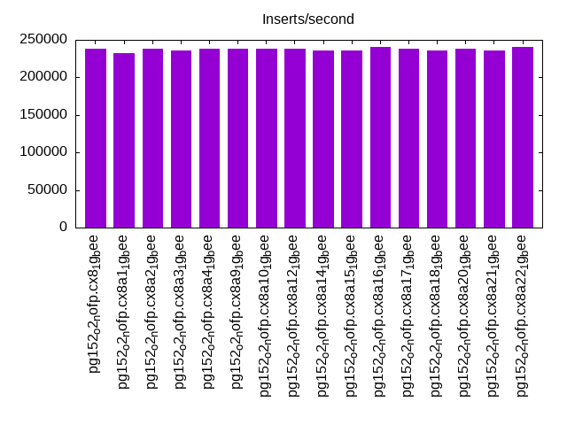
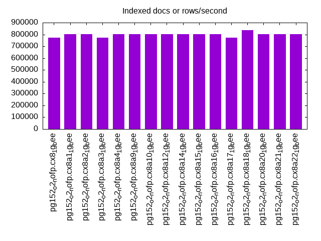
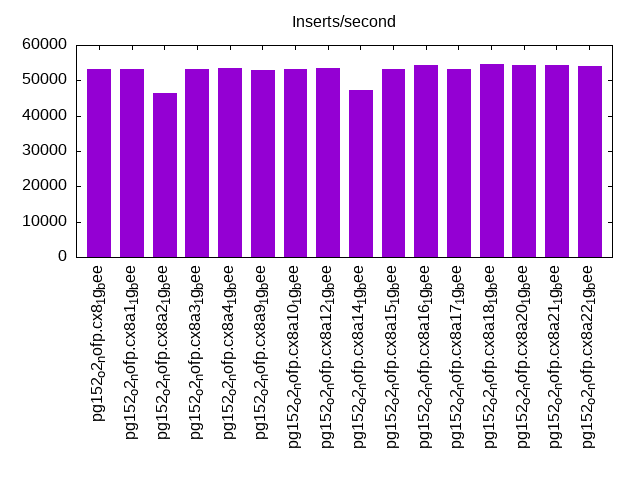
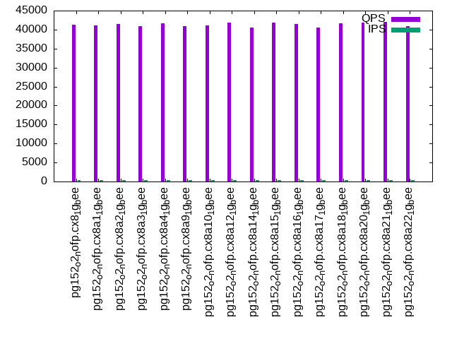
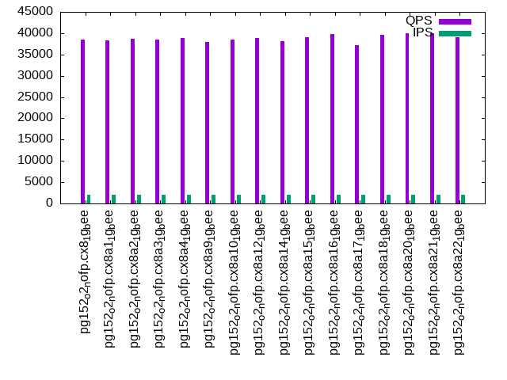
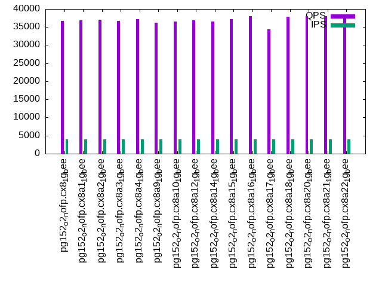

This is a report for the insert benchmark with 20M docs and 4 client(s). It is generated by scripts (bash, awk, sed) and Tufte might not be impressed. An overview of the insert benchmark is here and a short update is here. Below, by DBMS, I mean DBMS+version.config. An example is my8020.c10b40 where my means MySQL, 8020 is version 8.0.20 and c10b40 is the name for the configuration file.
The test server has 8 AMD cores, 16G RAM and an NVMe SSD. It is described here as the Beelink. The benchmark was run with 4 clients and there were 1 or 3 connections per client (1 for queries or inserts without rate limits, 1+1 for rate limited inserts+deletes). It uses 4 tables, one per client. It loads 20M rows per table without secondary indexes, creates secondary indexes, then inserts 50M rows per table with a delete per insert to avoid growing the table. It then does 3 read+write tests for 1800s each that do queries as fast as possible with 100, 500 and then 1000 inserts/second/client concurrent with the queries and 1000 deletes/second to avoid growing the table. The database is cached by the OS page cache but not by the storage engine. Clients and the DBMS share one server. The per-database configs are in the per-database subdirectories here.
The tested DBMS are:
The numbers are inserts/s for l.i0 and l.i1, indexed docs (or rows) /s for l.x and queries/s for q*.2. The values are the average rate over the entire test for inserts (IPS) and queries (QPS). The range of values for IPS and QPS is split into 3 parts: bottom 25%, middle 50%, top 25%. Values in the bottom 25% have a red background, values in the top 25% have a green background and values in the middle have no color. A gray background is used for values that can be ignored because the DBMS did not sustain the target insert rate. Red backgrounds are not used when the minimum value is within 80% of the max value.
| dbms | l.i0 | l.x | l.i1 | q100.1 | q500.1 | q1000.1 |
|---|---|---|---|---|---|---|
| pg152_o2_nofp.cx8_1g_bee | 238095 | 773077 | 53333 | 41226 | 38511 | 36659 |
| pg152_o2_nofp.cx8a1_1g_bee | 232558 | 804000 | 53348 | 41096 | 38393 | 36793 |
| pg152_o2_nofp.cx8a2_1g_bee | 238095 | 804000 | 46458 | 41418 | 38689 | 36950 |
| pg152_o2_nofp.cx8a3_1g_bee | 235294 | 773077 | 53255 | 40997 | 38476 | 36719 |
| pg152_o2_nofp.cx8a4_1g_bee | 238095 | 804000 | 53576 | 41596 | 38777 | 37214 |
| pg152_o2_nofp.cx8a9_1g_bee | 238095 | 804000 | 53050 | 40998 | 37920 | 36231 |
| pg152_o2_nofp.cx8a10_1g_bee | 238095 | 804000 | 53213 | 41040 | 38478 | 36560 |
| pg152_o2_nofp.cx8a12_1g_bee | 238095 | 804000 | 53569 | 41898 | 38830 | 36878 |
| pg152_o2_nofp.cx8a14_1g_bee | 235294 | 804000 | 47192 | 40604 | 38144 | 36506 |
| pg152_o2_nofp.cx8a15_1g_bee | 235294 | 804000 | 53086 | 41874 | 39039 | 37126 |
| pg152_o2_nofp.cx8a16_1g_bee | 240964 | 804000 | 54281 | 41526 | 39801 | 37947 |
| pg152_o2_nofp.cx8a17_1g_bee | 238095 | 773077 | 53213 | 40496 | 37264 | 34392 |
| pg152_o2_nofp.cx8a18_1g_bee | 235294 | 837500 | 54533 | 41699 | 39658 | 37786 |
| pg152_o2_nofp.cx8a20_1g_bee | 238095 | 804000 | 54259 | 41788 | 39910 | 38058 |
| pg152_o2_nofp.cx8a21_1g_bee | 235294 | 804000 | 54348 | 41962 | 40005 | 37961 |
| pg152_o2_nofp.cx8a22_1g_bee | 240964 | 804000 | 54010 | 40843 | 38957 | 37556 |
This table has relative throughput, throughput for the DBMS relative to the DBMS in the first line, using the absolute throughput from the previous table. Values less than 0.95 have a yellow background. Values greater than 1.05 have a blue background.
| dbms | l.i0 | l.x | l.i1 | q100.1 | q500.1 | q1000.1 |
|---|---|---|---|---|---|---|
| pg152_o2_nofp.cx8_1g_bee | 1.00 | 1.00 | 1.00 | 1.00 | 1.00 | 1.00 |
| pg152_o2_nofp.cx8a1_1g_bee | 0.98 | 1.04 | 1.00 | 1.00 | 1.00 | 1.00 |
| pg152_o2_nofp.cx8a2_1g_bee | 1.00 | 1.04 | 0.87 | 1.00 | 1.00 | 1.01 |
| pg152_o2_nofp.cx8a3_1g_bee | 0.99 | 1.00 | 1.00 | 0.99 | 1.00 | 1.00 |
| pg152_o2_nofp.cx8a4_1g_bee | 1.00 | 1.04 | 1.00 | 1.01 | 1.01 | 1.02 |
| pg152_o2_nofp.cx8a9_1g_bee | 1.00 | 1.04 | 0.99 | 0.99 | 0.98 | 0.99 |
| pg152_o2_nofp.cx8a10_1g_bee | 1.00 | 1.04 | 1.00 | 1.00 | 1.00 | 1.00 |
| pg152_o2_nofp.cx8a12_1g_bee | 1.00 | 1.04 | 1.00 | 1.02 | 1.01 | 1.01 |
| pg152_o2_nofp.cx8a14_1g_bee | 0.99 | 1.04 | 0.88 | 0.98 | 0.99 | 1.00 |
| pg152_o2_nofp.cx8a15_1g_bee | 0.99 | 1.04 | 1.00 | 1.02 | 1.01 | 1.01 |
| pg152_o2_nofp.cx8a16_1g_bee | 1.01 | 1.04 | 1.02 | 1.01 | 1.03 | 1.04 |
| pg152_o2_nofp.cx8a17_1g_bee | 1.00 | 1.00 | 1.00 | 0.98 | 0.97 | 0.94 |
| pg152_o2_nofp.cx8a18_1g_bee | 0.99 | 1.08 | 1.02 | 1.01 | 1.03 | 1.03 |
| pg152_o2_nofp.cx8a20_1g_bee | 1.00 | 1.04 | 1.02 | 1.01 | 1.04 | 1.04 |
| pg152_o2_nofp.cx8a21_1g_bee | 0.99 | 1.04 | 1.02 | 1.02 | 1.04 | 1.04 |
| pg152_o2_nofp.cx8a22_1g_bee | 1.01 | 1.04 | 1.01 | 0.99 | 1.01 | 1.02 |
This lists the average rate of inserts/s for the tests that do inserts concurrent with queries. For such tests the query rate is listed in the table above. The read+write tests are setup so that the insert rate should match the target rate every second. Cells that are not at least 95% of the target have a red background to indicate a failure to satisfy the target.
| dbms | q100.1 | q500.1 | q1000.1 |
|---|---|---|---|
| pg152_o2_nofp.cx8_1g_bee | 399 | 1993 | 3989 |
| pg152_o2_nofp.cx8a1_1g_bee | 399 | 1993 | 3989 |
| pg152_o2_nofp.cx8a2_1g_bee | 399 | 1994 | 3989 |
| pg152_o2_nofp.cx8a3_1g_bee | 399 | 1994 | 3989 |
| pg152_o2_nofp.cx8a4_1g_bee | 399 | 1994 | 3989 |
| pg152_o2_nofp.cx8a9_1g_bee | 399 | 1994 | 3989 |
| pg152_o2_nofp.cx8a10_1g_bee | 399 | 1994 | 3989 |
| pg152_o2_nofp.cx8a12_1g_bee | 399 | 1993 | 3989 |
| pg152_o2_nofp.cx8a14_1g_bee | 399 | 1994 | 3989 |
| pg152_o2_nofp.cx8a15_1g_bee | 399 | 1993 | 3987 |
| pg152_o2_nofp.cx8a16_1g_bee | 399 | 1993 | 3989 |
| pg152_o2_nofp.cx8a17_1g_bee | 399 | 1994 | 3989 |
| pg152_o2_nofp.cx8a18_1g_bee | 399 | 1994 | 3989 |
| pg152_o2_nofp.cx8a20_1g_bee | 399 | 1994 | 3989 |
| pg152_o2_nofp.cx8a21_1g_bee | 399 | 1994 | 3987 |
| pg152_o2_nofp.cx8a22_1g_bee | 399 | 1994 | 3987 |
| target | 400 | 2000 | 4000 |
l.i0: load without secondary indexes. Graphs for performance per 1-second interval are here.
Average throughput:
Insert response time histogram: each cell has the percentage of responses that take <= the time in the header and max is the max response time in seconds. For the max column values in the top 25% of the range have a red background and in the bottom 25% of the range have a green background. The red background is not used when the min value is within 80% of the max value.
| dbms | 256us | 1ms | 4ms | 16ms | 64ms | 256ms | 1s | 4s | 16s | gt | max |
|---|---|---|---|---|---|---|---|---|---|---|---|
| pg152_o2_nofp.cx8_1g_bee | 99.926 | 0.073 | 0.001 | 0.021 | |||||||
| pg152_o2_nofp.cx8a1_1g_bee | 99.912 | 0.089 | 0.013 | ||||||||
| pg152_o2_nofp.cx8a2_1g_bee | 99.925 | 0.075 | 0.012 | ||||||||
| pg152_o2_nofp.cx8a3_1g_bee | 99.919 | 0.081 | 0.013 | ||||||||
| pg152_o2_nofp.cx8a4_1g_bee | 99.906 | 0.093 | 0.011 | ||||||||
| pg152_o2_nofp.cx8a9_1g_bee | 99.918 | 0.082 | 0.013 | ||||||||
| pg152_o2_nofp.cx8a10_1g_bee | 99.918 | 0.082 | 0.011 | ||||||||
| pg152_o2_nofp.cx8a12_1g_bee | 99.912 | 0.088 | 0.014 | ||||||||
| pg152_o2_nofp.cx8a14_1g_bee | 99.922 | 0.077 | 0.011 | ||||||||
| pg152_o2_nofp.cx8a15_1g_bee | 99.919 | 0.081 | 0.011 | ||||||||
| pg152_o2_nofp.cx8a16_1g_bee | 99.910 | 0.089 | 0.012 | ||||||||
| pg152_o2_nofp.cx8a17_1g_bee | 99.928 | 0.072 | 0.011 | ||||||||
| pg152_o2_nofp.cx8a18_1g_bee | 99.894 | 0.105 | 0.011 | ||||||||
| pg152_o2_nofp.cx8a20_1g_bee | 99.915 | 0.085 | 0.014 | ||||||||
| pg152_o2_nofp.cx8a21_1g_bee | 99.908 | 0.092 | 0.011 | ||||||||
| pg152_o2_nofp.cx8a22_1g_bee | 99.918 | 0.082 | 0.013 |
Performance metrics for the DBMS listed above. Some are normalized by throughput, others are not. Legend for results is here.
ips qps rps rmbps wps wmbps rpq rkbpq wpi wkbpi csps cpups cspq cpupq dbgb1 dbgb2 rss maxop p50 p99 tag 238095 0 0 0.0 716.5 113.5 0.000 0.000 0.003 0.488 23377 72.3 0.098 24 1.9 5.2 1.0 0.021 70722 43766 20m.pg152_o2_nofp.cx8_1g_bee 232558 0 0 0.0 730.3 110.1 0.000 0.000 0.003 0.485 22849 71.0 0.098 24 1.9 5.2 0.0 0.013 69350 40956 20m.pg152_o2_nofp.cx8a1_1g_bee 238095 0 0 0.0 718.3 114.1 0.000 0.000 0.003 0.491 23500 72.0 0.099 24 1.9 5.2 1.0 0.012 71028 2298 20m.pg152_o2_nofp.cx8a2_1g_bee 235294 0 0 0.0 726.2 109.6 0.000 0.000 0.003 0.477 22913 70.7 0.097 24 1.9 5.2 0.9 0.013 69625 16082 20m.pg152_o2_nofp.cx8a3_1g_bee 238095 0 0 0.0 719.4 114.3 0.000 0.000 0.003 0.492 23608 72.2 0.099 24 1.9 5.2 1.0 0.011 71089 9689 20m.pg152_o2_nofp.cx8a4_1g_bee 238095 0 0 0.0 712.7 113.4 0.000 0.000 0.003 0.488 23249 71.9 0.098 24 1.9 5.2 1.0 0.013 70233 49446 20m.pg152_o2_nofp.cx8a9_1g_bee 238095 0 0 0.0 691.3 114.4 0.000 0.000 0.003 0.492 23577 72.4 0.099 24 1.9 5.2 0.0 0.011 70723 61658 20m.pg152_o2_nofp.cx8a10_1g_bee 238095 0 0 0.0 604.2 112.7 0.000 0.000 0.003 0.485 22882 72.1 0.096 24 1.9 5.2 0.0 0.014 70223 40756 20m.pg152_o2_nofp.cx8a12_1g_bee 235294 0 0 0.0 715.3 113.5 0.000 0.000 0.003 0.494 23286 71.9 0.099 24 1.9 5.2 1.0 0.011 70423 31178 20m.pg152_o2_nofp.cx8a14_1g_bee 235294 0 0 0.0 714.4 113.5 0.000 0.000 0.003 0.494 23316 72.3 0.099 25 1.9 5.2 0.0 0.011 70223 52243 20m.pg152_o2_nofp.cx8a15_1g_bee 240964 0 0 0.0 710.7 114.3 0.000 0.000 0.003 0.486 21900 72.2 0.091 24 1.9 5.2 1.0 0.012 71023 62452 20m.pg152_o2_nofp.cx8a16_1g_bee 238095 0 0 0.0 720.5 113.6 0.000 0.000 0.003 0.489 23384 71.9 0.098 24 1.9 5.2 0.0 0.011 70823 28569 20m.pg152_o2_nofp.cx8a17_1g_bee 235294 0 0 0.0 698.4 113.6 0.000 0.000 0.003 0.494 23489 72.2 0.100 25 1.9 5.2 0.0 0.011 70624 28569 20m.pg152_o2_nofp.cx8a18_1g_bee 238095 0 0 0.0 715.3 113.7 0.000 0.000 0.003 0.489 23359 72.4 0.098 24 1.9 5.2 1.0 0.014 70546 40269 20m.pg152_o2_nofp.cx8a20_1g_bee 235294 0 0 0.0 724.4 110.0 0.000 0.000 0.003 0.479 22785 71.4 0.097 24 1.9 5.2 0.0 0.011 69524 22476 20m.pg152_o2_nofp.cx8a21_1g_bee 240964 0 0 0.0 717.0 113.8 0.000 0.000 0.003 0.483 23013 72.6 0.096 24 1.9 5.2 0.9 0.013 70649 15983 20m.pg152_o2_nofp.cx8a22_1g_bee
l.x: create secondary indexes.
Average throughput:
Performance metrics for the DBMS listed above. Some are normalized by throughput, others are not. Legend for results is here.
ips qps rps rmbps wps wmbps rpq rkbpq wpi wkbpi csps cpups cspq cpupq dbgb1 dbgb2 rss maxop p50 p99 tag 773077 0 0 0.0 651.0 207.2 0.000 0.000 0.001 0.275 2244 37.3 0.003 4 3.7 8.6 0.0 0.003 NA NA 20m.pg152_o2_nofp.cx8_1g_bee 804000 0 0 0.0 550.6 166.2 0.000 0.000 0.001 0.212 2081 38.3 0.003 4 3.7 8.0 0.0 0.003 NA NA 20m.pg152_o2_nofp.cx8a1_1g_bee 804000 0 0 0.0 643.7 207.4 0.000 0.000 0.001 0.264 2461 37.7 0.003 4 3.7 8.6 0.0 0.003 NA NA 20m.pg152_o2_nofp.cx8a2_1g_bee 773077 0 0 0.0 651.2 208.1 0.000 0.000 0.001 0.276 2390 37.8 0.003 4 3.7 8.6 0.0 0.004 NA NA 20m.pg152_o2_nofp.cx8a3_1g_bee 804000 0 0 0.0 643.6 207.7 0.000 0.000 0.001 0.265 2365 37.2 0.003 4 3.7 8.6 0.0 0.003 NA NA 20m.pg152_o2_nofp.cx8a4_1g_bee 804000 0 0 0.0 664.1 208.1 0.000 0.000 0.001 0.265 2043 37.7 0.003 4 3.7 8.6 0.0 0.003 NA NA 20m.pg152_o2_nofp.cx8a9_1g_bee 804000 0 0 0.0 565.7 205.8 0.000 0.000 0.001 0.262 2082 37.7 0.003 4 3.7 8.6 0.0 0.003 NA NA 20m.pg152_o2_nofp.cx8a10_1g_bee 804000 0 0 0.0 616.4 216.3 0.000 0.000 0.001 0.275 2509 37.3 0.003 4 3.7 8.6 0.0 0.004 NA NA 20m.pg152_o2_nofp.cx8a12_1g_bee 804000 0 0 0.0 653.1 208.5 0.000 0.000 0.001 0.266 2112 37.7 0.003 4 3.7 8.6 0.0 0.003 NA NA 20m.pg152_o2_nofp.cx8a14_1g_bee 804000 0 0 0.0 649.6 206.0 0.000 0.000 0.001 0.262 2436 37.8 0.003 4 3.7 8.6 0.0 0.003 NA NA 20m.pg152_o2_nofp.cx8a15_1g_bee 804000 0 0 0.0 671.1 216.5 0.000 0.000 0.001 0.276 3203 37.7 0.004 4 3.7 8.6 0.0 0.003 NA NA 20m.pg152_o2_nofp.cx8a16_1g_bee 773077 0 0 0.0 642.8 204.6 0.000 0.000 0.001 0.271 2183 37.0 0.003 4 3.7 8.6 0.0 0.003 NA NA 20m.pg152_o2_nofp.cx8a17_1g_bee 837500 0 0 0.0 483.3 123.3 0.000 0.000 0.001 0.151 1596 42.0 0.002 4 3.7 8.0 0.0 0.003 NA NA 20m.pg152_o2_nofp.cx8a18_1g_bee 804000 0 0 0.0 673.9 213.5 0.000 0.000 0.001 0.272 2366 37.7 0.003 4 3.7 8.6 0.0 0.003 NA NA 20m.pg152_o2_nofp.cx8a20_1g_bee 804000 0 0 0.0 562.9 166.1 0.000 0.000 0.001 0.212 2484 39.7 0.003 4 3.7 8.0 0.0 0.003 NA NA 20m.pg152_o2_nofp.cx8a21_1g_bee 804000 0 0 0.0 675.3 213.7 0.000 0.000 0.001 0.272 2459 38.0 0.003 4 3.7 8.6 0.0 0.003 NA NA 20m.pg152_o2_nofp.cx8a22_1g_bee
l.i1: continue load after secondary indexes created. Graphs for performance per 1-second interval are here.
Average throughput:
Insert response time histogram: each cell has the percentage of responses that take <= the time in the header and max is the max response time in seconds. For the max column values in the top 25% of the range have a red background and in the bottom 25% of the range have a green background. The red background is not used when the min value is within 80% of the max value.
| dbms | 256us | 1ms | 4ms | 16ms | 64ms | 256ms | 1s | 4s | 16s | gt | max |
|---|---|---|---|---|---|---|---|---|---|---|---|
| pg152_o2_nofp.cx8_1g_bee | 88.344 | 11.625 | 0.030 | 0.001 | 0.157 | ||||||
| pg152_o2_nofp.cx8a1_1g_bee | 88.182 | 11.794 | 0.021 | 0.002 | 0.207 | ||||||
| pg152_o2_nofp.cx8a2_1g_bee | 59.906 | 39.928 | 0.161 | 0.005 | 0.117 | ||||||
| pg152_o2_nofp.cx8a3_1g_bee | 88.554 | 11.431 | 0.015 | 0.001 | 0.186 | ||||||
| pg152_o2_nofp.cx8a4_1g_bee | 88.564 | 11.400 | 0.035 | 0.001 | 0.178 | ||||||
| pg152_o2_nofp.cx8a9_1g_bee | 88.425 | 11.541 | 0.033 | 0.002 | 0.149 | ||||||
| pg152_o2_nofp.cx8a10_1g_bee | 88.260 | 11.698 | 0.036 | 0.006 | 0.190 | ||||||
| pg152_o2_nofp.cx8a12_1g_bee | 88.419 | 11.556 | 0.023 | 0.002 | nonzero | 0.491 | |||||
| pg152_o2_nofp.cx8a14_1g_bee | 57.178 | 42.665 | 0.152 | 0.004 | 0.123 | ||||||
| pg152_o2_nofp.cx8a15_1g_bee | 87.228 | 12.625 | 0.144 | 0.003 | 0.136 | ||||||
| pg152_o2_nofp.cx8a16_1g_bee | 85.806 | 14.160 | 0.032 | 0.002 | 0.185 | ||||||
| pg152_o2_nofp.cx8a17_1g_bee | 89.554 | 10.415 | 0.029 | 0.002 | 0.144 | ||||||
| pg152_o2_nofp.cx8a18_1g_bee | 86.187 | 13.796 | 0.017 | 0.001 | nonzero | 0.426 | |||||
| pg152_o2_nofp.cx8a20_1g_bee | 85.879 | 14.096 | 0.022 | 0.003 | nonzero | 0.503 | |||||
| pg152_o2_nofp.cx8a21_1g_bee | 85.965 | 14.015 | 0.018 | 0.002 | 0.163 | ||||||
| pg152_o2_nofp.cx8a22_1g_bee | 85.831 | 14.130 | 0.036 | 0.004 | 0.151 |
Delete response time histogram: each cell has the percentage of responses that take <= the time in the header and max is the max response time in seconds. For the max column values in the top 25% of the range have a red background and in the bottom 25% of the range have a green background. The red background is not used when the min value is within 80% of the max value.
| dbms | 256us | 1ms | 4ms | 16ms | 64ms | 256ms | 1s | 4s | 16s | gt | max |
|---|---|---|---|---|---|---|---|---|---|---|---|
| pg152_o2_nofp.cx8_1g_bee | 1.838 | 89.548 | 2.191 | 6.366 | 0.057 | nonzero | 0.122 | ||||
| pg152_o2_nofp.cx8a1_1g_bee | 1.806 | 90.216 | 2.405 | 5.413 | 0.160 | nonzero | 0.169 | ||||
| pg152_o2_nofp.cx8a2_1g_bee | 0.804 | 90.538 | 1.498 | 7.094 | 0.065 | nonzero | 0.090 | ||||
| pg152_o2_nofp.cx8a3_1g_bee | 1.993 | 89.444 | 2.083 | 6.373 | 0.108 | nonzero | 0.075 | ||||
| pg152_o2_nofp.cx8a4_1g_bee | 2.005 | 89.810 | 2.295 | 5.811 | 0.079 | nonzero | 0.171 | ||||
| pg152_o2_nofp.cx8a9_1g_bee | 2.060 | 89.375 | 2.299 | 6.122 | 0.143 | 0.001 | 0.146 | ||||
| pg152_o2_nofp.cx8a10_1g_bee | 1.968 | 89.793 | 2.556 | 5.533 | 0.149 | 0.002 | 0.200 | ||||
| pg152_o2_nofp.cx8a12_1g_bee | 1.984 | 89.815 | 2.468 | 5.641 | 0.091 | nonzero | nonzero | 0.488 | |||
| pg152_o2_nofp.cx8a14_1g_bee | 1.011 | 90.100 | 1.461 | 7.367 | 0.060 | nonzero | 0.125 | ||||
| pg152_o2_nofp.cx8a15_1g_bee | 1.811 | 89.518 | 3.494 | 5.083 | 0.093 | 0.001 | 0.136 | ||||
| pg152_o2_nofp.cx8a16_1g_bee | 2.067 | 89.541 | 2.592 | 5.773 | 0.026 | nonzero | 0.124 | ||||
| pg152_o2_nofp.cx8a17_1g_bee | 1.771 | 89.559 | 2.274 | 6.336 | 0.059 | nonzero | 0.132 | ||||
| pg152_o2_nofp.cx8a18_1g_bee | 1.884 | 89.822 | 2.716 | 5.549 | 0.029 | nonzero | nonzero | 0.422 | |||
| pg152_o2_nofp.cx8a20_1g_bee | 2.006 | 89.769 | 2.784 | 5.416 | 0.024 | 0.001 | nonzero | 0.400 | |||
| pg152_o2_nofp.cx8a21_1g_bee | 2.138 | 89.291 | 2.777 | 5.766 | 0.029 | nonzero | 0.107 | ||||
| pg152_o2_nofp.cx8a22_1g_bee | 2.014 | 89.751 | 2.698 | 5.503 | 0.032 | 0.001 | 0.143 |
Performance metrics for the DBMS listed above. Some are normalized by throughput, others are not. Legend for results is here.
ips qps rps rmbps wps wmbps rpq rkbpq wpi wkbpi csps cpups cspq cpupq dbgb1 dbgb2 rss maxop p50 p99 tag 53333 0 12 0.1 47874.1 799.7 0.000 0.002 0.898 15.354 28583 70.5 0.536 106 6.2 46.3 0.9 0.157 14588 4195 20m.pg152_o2_nofp.cx8_1g_bee 53348 0 11 0.1 48398.6 802.7 0.000 0.001 0.907 15.408 28582 70.1 0.536 105 6.3 46.3 0.0 0.207 14534 4145 20m.pg152_o2_nofp.cx8a1_1g_bee 46458 0 6 0.1 98923.1 832.2 0.000 0.001 2.129 18.342 24424 68.3 0.526 118 6.2 46.2 0.0 0.117 12536 4545 20m.pg152_o2_nofp.cx8a2_1g_bee 53255 0 7 0.1 48330.7 797.3 0.000 0.001 0.908 15.330 28244 70.6 0.530 106 6.2 46.3 1.0 0.186 14634 4145 20m.pg152_o2_nofp.cx8a3_1g_bee 53576 0 14 0.1 48086.9 804.6 0.000 0.002 0.898 15.378 28704 70.2 0.536 105 6.2 46.3 0.0 0.178 14634 4197 20m.pg152_o2_nofp.cx8a4_1g_bee 53050 0 16 0.1 48061.0 800.0 0.000 0.002 0.906 15.442 28285 70.6 0.533 106 6.2 46.3 0.0 0.149 14631 4147 20m.pg152_o2_nofp.cx8a9_1g_bee 53213 0 21 0.1 48362.1 805.3 0.000 0.002 0.909 15.496 28685 69.9 0.539 105 6.3 46.4 0.0 0.190 14534 4097 20m.pg152_o2_nofp.cx8a10_1g_bee 53569 0 16 0.1 48463.1 807.5 0.000 0.002 0.905 15.436 28808 70.2 0.538 105 6.3 46.3 0.0 0.491 14584 4190 20m.pg152_o2_nofp.cx8a12_1g_bee 47192 0 7 0.1 97710.4 825.7 0.000 0.001 2.070 17.917 24879 68.5 0.527 116 6.2 46.2 0.2 0.123 12735 4597 20m.pg152_o2_nofp.cx8a14_1g_bee 53086 0 108 0.6 48407.5 818.2 0.002 0.012 0.912 15.783 28505 69.6 0.537 105 6.3 16.3 0.0 0.136 14334 4195 20m.pg152_o2_nofp.cx8a15_1g_bee 54281 0 8 0.0 47893.0 829.1 0.000 0.001 0.882 15.642 29642 71.3 0.546 105 5.9 46.0 1.0 0.185 14385 5993 20m.pg152_o2_nofp.cx8a16_1g_bee 53213 0 11 0.1 41626.8 805.9 0.000 0.002 0.782 15.508 28339 69.7 0.533 105 6.2 46.3 0.0 0.144 14634 4195 20m.pg152_o2_nofp.cx8a17_1g_bee 54533 0 5 0.0 48097.3 829.0 0.000 0.000 0.882 15.567 29703 71.2 0.545 104 5.9 45.9 0.5 0.426 14434 5993 20m.pg152_o2_nofp.cx8a18_1g_bee 54259 0 18 0.1 47401.2 828.5 0.000 0.002 0.874 15.637 29753 70.9 0.548 105 5.9 46.0 0.4 0.503 14341 5644 20m.pg152_o2_nofp.cx8a20_1g_bee 54348 0 7 0.0 46841.0 820.1 0.000 0.001 0.862 15.452 29862 71.1 0.549 105 5.9 45.9 0.2 0.163 14434 6043 20m.pg152_o2_nofp.cx8a21_1g_bee 54010 0 21 0.2 47864.2 830.9 0.000 0.003 0.886 15.754 29666 70.8 0.549 105 5.9 46.0 0.1 0.151 14383 5194 20m.pg152_o2_nofp.cx8a22_1g_bee
q100.1: range queries with 100 insert/s per client. Graphs for performance per 1-second interval are here.
Average throughput:
Query response time histogram: each cell has the percentage of responses that take <= the time in the header and max is the max response time in seconds. For max values in the top 25% of the range have a red background and in the bottom 25% of the range have a green background. The red background is not used when the min value is within 80% of the max value.
| dbms | 256us | 1ms | 4ms | 16ms | 64ms | 256ms | 1s | 4s | 16s | gt | max |
|---|---|---|---|---|---|---|---|---|---|---|---|
| pg152_o2_nofp.cx8_1g_bee | 99.970 | 0.021 | 0.008 | nonzero | 0.011 | ||||||
| pg152_o2_nofp.cx8a1_1g_bee | 99.966 | 0.025 | 0.010 | nonzero | 0.011 | ||||||
| pg152_o2_nofp.cx8a2_1g_bee | 99.974 | 0.017 | 0.009 | nonzero | 0.012 | ||||||
| pg152_o2_nofp.cx8a3_1g_bee | 99.974 | 0.016 | 0.009 | nonzero | 0.010 | ||||||
| pg152_o2_nofp.cx8a4_1g_bee | 99.973 | 0.019 | 0.008 | nonzero | 0.011 | ||||||
| pg152_o2_nofp.cx8a9_1g_bee | 99.958 | 0.030 | 0.012 | nonzero | 0.013 | ||||||
| pg152_o2_nofp.cx8a10_1g_bee | 99.971 | 0.020 | 0.009 | nonzero | 0.010 | ||||||
| pg152_o2_nofp.cx8a12_1g_bee | 99.974 | 0.017 | 0.009 | nonzero | 0.014 | ||||||
| pg152_o2_nofp.cx8a14_1g_bee | 99.969 | 0.021 | 0.009 | nonzero | 0.012 | ||||||
| pg152_o2_nofp.cx8a15_1g_bee | 99.978 | 0.014 | 0.008 | nonzero | 0.011 | ||||||
| pg152_o2_nofp.cx8a16_1g_bee | 99.975 | 0.016 | 0.009 | nonzero | 0.010 | ||||||
| pg152_o2_nofp.cx8a17_1g_bee | 99.968 | 0.022 | 0.009 | nonzero | 0.008 | ||||||
| pg152_o2_nofp.cx8a18_1g_bee | 99.972 | 0.018 | 0.009 | nonzero | 0.011 | ||||||
| pg152_o2_nofp.cx8a20_1g_bee | 99.977 | 0.014 | 0.008 | nonzero | 0.010 | ||||||
| pg152_o2_nofp.cx8a21_1g_bee | 99.965 | 0.025 | 0.010 | nonzero | 0.011 | ||||||
| pg152_o2_nofp.cx8a22_1g_bee | 99.975 | 0.016 | 0.008 | nonzero | 0.010 |
Insert response time histogram: each cell has the percentage of responses that take <= the time in the header and max is the max response time in seconds. For max values in the top 25% of the range have a red background and in the bottom 25% of the range have a green background. The red background is not used when the min value is within 80% of the max value.
| dbms | 256us | 1ms | 4ms | 16ms | 64ms | 256ms | 1s | 4s | 16s | gt | max |
|---|---|---|---|---|---|---|---|---|---|---|---|
| pg152_o2_nofp.cx8_1g_bee | 99.507 | 0.493 | 0.009 | ||||||||
| pg152_o2_nofp.cx8a1_1g_bee | 99.028 | 0.972 | 0.010 | ||||||||
| pg152_o2_nofp.cx8a2_1g_bee | 99.792 | 0.208 | 0.008 | ||||||||
| pg152_o2_nofp.cx8a3_1g_bee | 99.472 | 0.528 | 0.010 | ||||||||
| pg152_o2_nofp.cx8a4_1g_bee | 99.847 | 0.153 | 0.011 | ||||||||
| pg152_o2_nofp.cx8a9_1g_bee | 99.549 | 0.451 | 0.009 | ||||||||
| pg152_o2_nofp.cx8a10_1g_bee | 99.479 | 0.521 | 0.009 | ||||||||
| pg152_o2_nofp.cx8a12_1g_bee | 99.806 | 0.194 | 0.010 | ||||||||
| pg152_o2_nofp.cx8a14_1g_bee | 99.812 | 0.188 | 0.014 | ||||||||
| pg152_o2_nofp.cx8a15_1g_bee | 99.653 | 0.347 | 0.011 | ||||||||
| pg152_o2_nofp.cx8a16_1g_bee | 99.785 | 0.215 | 0.010 | ||||||||
| pg152_o2_nofp.cx8a17_1g_bee | 99.375 | 0.625 | 0.009 | ||||||||
| pg152_o2_nofp.cx8a18_1g_bee | 99.125 | 0.875 | 0.010 | ||||||||
| pg152_o2_nofp.cx8a20_1g_bee | 99.833 | 0.160 | 0.007 | 0.026 | |||||||
| pg152_o2_nofp.cx8a21_1g_bee | 99.146 | 0.854 | 0.011 | ||||||||
| pg152_o2_nofp.cx8a22_1g_bee | 99.833 | 0.167 | 0.013 |
Delete response time histogram: each cell has the percentage of responses that take <= the time in the header and max is the max response time in seconds. For max values in the top 25% of the range have a red background and in the bottom 25% of the range have a green background. The red background is not used when the min value is within 80% of the max value.
| dbms | 256us | 1ms | 4ms | 16ms | 64ms | 256ms | 1s | 4s | 16s | gt | max |
|---|---|---|---|---|---|---|---|---|---|---|---|
| pg152_o2_nofp.cx8_1g_bee | 9.618 | 71.681 | 18.174 | 0.528 | 0.008 | ||||||
| pg152_o2_nofp.cx8a1_1g_bee | 10.014 | 77.049 | 12.514 | 0.424 | 0.013 | ||||||
| pg152_o2_nofp.cx8a2_1g_bee | 10.132 | 68.708 | 20.972 | 0.188 | 0.010 | ||||||
| pg152_o2_nofp.cx8a3_1g_bee | 13.229 | 62.493 | 23.639 | 0.639 | 0.007 | ||||||
| pg152_o2_nofp.cx8a4_1g_bee | 11.431 | 77.847 | 10.667 | 0.056 | 0.008 | ||||||
| pg152_o2_nofp.cx8a9_1g_bee | 14.438 | 65.139 | 19.965 | 0.458 | 0.008 | ||||||
| pg152_o2_nofp.cx8a10_1g_bee | 11.326 | 75.312 | 13.049 | 0.312 | 0.008 | ||||||
| pg152_o2_nofp.cx8a12_1g_bee | 9.708 | 78.194 | 12.056 | 0.042 | 0.007 | ||||||
| pg152_o2_nofp.cx8a14_1g_bee | 10.007 | 62.528 | 27.236 | 0.229 | 0.007 | ||||||
| pg152_o2_nofp.cx8a15_1g_bee | 10.243 | 80.667 | 9.028 | 0.062 | 0.006 | ||||||
| pg152_o2_nofp.cx8a16_1g_bee | 11.042 | 80.396 | 8.528 | 0.035 | 0.006 | ||||||
| pg152_o2_nofp.cx8a17_1g_bee | 11.868 | 75.208 | 12.535 | 0.389 | 0.010 | ||||||
| pg152_o2_nofp.cx8a18_1g_bee | 9.660 | 81.688 | 8.542 | 0.111 | 0.008 | ||||||
| pg152_o2_nofp.cx8a20_1g_bee | 10.285 | 81.306 | 8.389 | 0.021 | 0.009 | ||||||
| pg152_o2_nofp.cx8a21_1g_bee | 12.750 | 70.590 | 16.410 | 0.250 | 0.010 | ||||||
| pg152_o2_nofp.cx8a22_1g_bee | 9.660 | 81.799 | 8.479 | 0.062 | 0.009 |
Performance metrics for the DBMS listed above. Some are normalized by throughput, others are not. Legend for results is here.
ips qps rps rmbps wps wmbps rpq rkbpq wpi wkbpi csps cpups cspq cpupq dbgb1 dbgb2 rss maxop p50 p99 tag 399 41226 1 0.0 1745.1 14.9 0.000 0.000 4.376 38.286 157142 50.4 3.812 98 6.2 46.3 0.0 0.011 10437 8551 20m.pg152_o2_nofp.cx8_1g_bee 399 41096 0 0.0 1704.8 14.5 0.000 0.000 4.277 37.153 156799 50.4 3.815 98 6.3 46.3 0.0 0.011 10485 8266 20m.pg152_o2_nofp.cx8a1_1g_bee 399 41418 0 0.0 1693.8 14.1 0.000 0.000 4.247 36.091 157944 50.5 3.813 98 6.2 46.2 0.0 0.012 10564 8647 20m.pg152_o2_nofp.cx8a2_1g_bee 399 40997 0 0.0 1782.2 14.6 0.000 0.000 4.469 37.561 156264 50.5 3.812 99 6.2 46.3 0.0 0.010 10389 8455 20m.pg152_o2_nofp.cx8a3_1g_bee 399 41596 0 0.0 1719.9 14.4 0.000 0.000 4.313 36.931 158615 50.4 3.813 97 6.2 46.3 0.0 0.011 10580 8746 20m.pg152_o2_nofp.cx8a4_1g_bee 399 40998 0 0.0 1752.7 15.4 0.000 0.000 4.395 39.661 156407 50.4 3.815 98 6.2 46.3 0.0 0.013 10420 8407 20m.pg152_o2_nofp.cx8a9_1g_bee 399 41040 0 0.0 1726.1 14.8 0.000 0.000 4.328 37.915 156523 50.4 3.814 98 6.3 46.4 0.0 0.010 10437 8551 20m.pg152_o2_nofp.cx8a10_1g_bee 399 41898 0 0.0 1704.7 14.8 0.000 0.000 4.274 37.978 159790 50.5 3.814 96 6.3 46.3 0.0 0.014 10664 9050 20m.pg152_o2_nofp.cx8a12_1g_bee 399 40604 0 0.0 1699.7 14.1 0.000 0.000 4.262 36.128 154800 50.5 3.812 99 6.2 46.2 0.0 0.012 10296 8407 20m.pg152_o2_nofp.cx8a14_1g_bee 399 41874 1 0.0 1700.2 14.5 0.000 0.000 4.263 37.195 159673 50.4 3.813 96 6.3 16.3 0.0 0.011 10724 9030 20m.pg152_o2_nofp.cx8a15_1g_bee 399 41526 0 0.0 1701.4 14.2 0.000 0.000 4.266 36.533 158365 50.5 3.814 97 5.9 45.9 0.0 0.010 10453 8426 20m.pg152_o2_nofp.cx8a16_1g_bee 399 40496 0 0.0 1679.3 14.2 0.000 0.000 4.213 36.513 154499 50.4 3.815 100 6.2 46.2 0.0 0.008 10341 8491 20m.pg152_o2_nofp.cx8a17_1g_bee 399 41699 0 0.0 1700.8 14.0 0.000 0.000 4.265 36.023 159030 50.5 3.814 97 5.9 45.9 0.0 0.011 10568 8743 20m.pg152_o2_nofp.cx8a18_1g_bee 399 41788 0 0.0 1703.7 14.3 0.000 0.000 4.274 36.859 159453 50.5 3.816 97 5.9 46.0 0.0 0.010 10596 8902 20m.pg152_o2_nofp.cx8a20_1g_bee 399 41962 0 0.0 1704.2 14.0 0.000 0.000 4.273 36.024 160122 50.4 3.816 96 5.9 45.9 0.0 0.011 10659 8854 20m.pg152_o2_nofp.cx8a21_1g_bee 399 40843 0 0.0 1701.6 14.0 0.000 0.000 4.269 35.923 155854 50.5 3.816 99 5.9 46.0 0.0 0.010 10341 8679 20m.pg152_o2_nofp.cx8a22_1g_bee
q500.1: range queries with 500 insert/s per client. Graphs for performance per 1-second interval are here.
Average throughput:
Query response time histogram: each cell has the percentage of responses that take <= the time in the header and max is the max response time in seconds. For max values in the top 25% of the range have a red background and in the bottom 25% of the range have a green background. The red background is not used when the min value is within 80% of the max value.
| dbms | 256us | 1ms | 4ms | 16ms | 64ms | 256ms | 1s | 4s | 16s | gt | max |
|---|---|---|---|---|---|---|---|---|---|---|---|
| pg152_o2_nofp.cx8_1g_bee | 99.878 | 0.093 | 0.024 | 0.005 | nonzero | 0.022 | |||||
| pg152_o2_nofp.cx8a1_1g_bee | 99.880 | 0.091 | 0.025 | 0.004 | nonzero | 0.020 | |||||
| pg152_o2_nofp.cx8a2_1g_bee | 99.887 | 0.084 | 0.025 | 0.005 | nonzero | 0.023 | |||||
| pg152_o2_nofp.cx8a3_1g_bee | 99.887 | 0.084 | 0.024 | 0.005 | nonzero | 0.022 | |||||
| pg152_o2_nofp.cx8a4_1g_bee | 99.880 | 0.091 | 0.024 | 0.005 | nonzero | 0.024 | |||||
| pg152_o2_nofp.cx8a9_1g_bee | 99.841 | 0.127 | 0.027 | 0.005 | nonzero | 0.019 | |||||
| pg152_o2_nofp.cx8a10_1g_bee | 99.876 | 0.095 | 0.024 | 0.005 | nonzero | 0.019 | |||||
| pg152_o2_nofp.cx8a12_1g_bee | 99.879 | 0.092 | 0.024 | 0.005 | nonzero | 0.023 | |||||
| pg152_o2_nofp.cx8a14_1g_bee | 99.880 | 0.091 | 0.025 | 0.005 | nonzero | 0.021 | |||||
| pg152_o2_nofp.cx8a15_1g_bee | 99.877 | 0.095 | 0.024 | 0.004 | nonzero | 0.021 | |||||
| pg152_o2_nofp.cx8a16_1g_bee | 99.900 | 0.071 | 0.026 | 0.003 | nonzero | 0.023 | |||||
| pg152_o2_nofp.cx8a17_1g_bee | 99.849 | 0.118 | 0.028 | 0.005 | nonzero | 0.027 | |||||
| pg152_o2_nofp.cx8a18_1g_bee | 99.898 | 0.073 | 0.026 | 0.004 | nonzero | 0.024 | |||||
| pg152_o2_nofp.cx8a20_1g_bee | 99.899 | 0.073 | 0.024 | 0.004 | nonzero | 0.018 | |||||
| pg152_o2_nofp.cx8a21_1g_bee | 99.894 | 0.077 | 0.025 | 0.004 | nonzero | 0.019 | |||||
| pg152_o2_nofp.cx8a22_1g_bee | 99.891 | 0.079 | 0.025 | 0.004 | nonzero | 0.023 |
Insert response time histogram: each cell has the percentage of responses that take <= the time in the header and max is the max response time in seconds. For max values in the top 25% of the range have a red background and in the bottom 25% of the range have a green background. The red background is not used when the min value is within 80% of the max value.
| dbms | 256us | 1ms | 4ms | 16ms | 64ms | 256ms | 1s | 4s | 16s | gt | max |
|---|---|---|---|---|---|---|---|---|---|---|---|
| pg152_o2_nofp.cx8_1g_bee | 93.593 | 6.276 | 0.131 | 0.039 | |||||||
| pg152_o2_nofp.cx8a1_1g_bee | 96.074 | 3.849 | 0.078 | 0.027 | |||||||
| pg152_o2_nofp.cx8a2_1g_bee | 95.140 | 4.761 | 0.099 | 0.026 | |||||||
| pg152_o2_nofp.cx8a3_1g_bee | 94.514 | 5.381 | 0.106 | 0.033 | |||||||
| pg152_o2_nofp.cx8a4_1g_bee | 94.364 | 5.550 | 0.086 | 0.028 | |||||||
| pg152_o2_nofp.cx8a9_1g_bee | 97.097 | 2.874 | 0.029 | 0.022 | |||||||
| pg152_o2_nofp.cx8a10_1g_bee | 95.022 | 4.903 | 0.075 | 0.026 | |||||||
| pg152_o2_nofp.cx8a12_1g_bee | 95.506 | 4.394 | 0.100 | 0.027 | |||||||
| pg152_o2_nofp.cx8a14_1g_bee | 96.399 | 3.539 | 0.062 | 0.028 | |||||||
| pg152_o2_nofp.cx8a15_1g_bee | 97.189 | 2.769 | 0.042 | 0.026 | |||||||
| pg152_o2_nofp.cx8a16_1g_bee | 97.194 | 2.768 | 0.037 | 0.024 | |||||||
| pg152_o2_nofp.cx8a17_1g_bee | 95.196 | 4.768 | 0.036 | 0.024 | |||||||
| pg152_o2_nofp.cx8a18_1g_bee | 96.167 | 3.769 | 0.064 | 0.027 | |||||||
| pg152_o2_nofp.cx8a20_1g_bee | 97.322 | 2.633 | 0.044 | 0.026 | |||||||
| pg152_o2_nofp.cx8a21_1g_bee | 96.035 | 3.911 | 0.054 | 0.026 | |||||||
| pg152_o2_nofp.cx8a22_1g_bee | 94.894 | 5.053 | 0.053 | 0.022 |
Delete response time histogram: each cell has the percentage of responses that take <= the time in the header and max is the max response time in seconds. For max values in the top 25% of the range have a red background and in the bottom 25% of the range have a green background. The red background is not used when the min value is within 80% of the max value.
| dbms | 256us | 1ms | 4ms | 16ms | 64ms | 256ms | 1s | 4s | 16s | gt | max |
|---|---|---|---|---|---|---|---|---|---|---|---|
| pg152_o2_nofp.cx8_1g_bee | 34.774 | 41.744 | 9.108 | 14.137 | 0.236 | 0.034 | |||||
| pg152_o2_nofp.cx8a1_1g_bee | 29.832 | 49.721 | 8.354 | 12.000 | 0.093 | 0.033 | |||||
| pg152_o2_nofp.cx8a2_1g_bee | 37.858 | 41.136 | 8.139 | 12.785 | 0.082 | 0.031 | |||||
| pg152_o2_nofp.cx8a3_1g_bee | 40.347 | 36.475 | 9.004 | 13.953 | 0.221 | 0.036 | |||||
| pg152_o2_nofp.cx8a4_1g_bee | 37.604 | 39.343 | 8.575 | 14.303 | 0.175 | 0.036 | |||||
| pg152_o2_nofp.cx8a9_1g_bee | 40.547 | 38.297 | 7.883 | 13.221 | 0.051 | 0.035 | |||||
| pg152_o2_nofp.cx8a10_1g_bee | 37.317 | 39.842 | 8.500 | 14.217 | 0.125 | 0.035 | |||||
| pg152_o2_nofp.cx8a12_1g_bee | 35.665 | 41.436 | 8.154 | 14.550 | 0.194 | 0.050 | |||||
| pg152_o2_nofp.cx8a14_1g_bee | 39.853 | 40.318 | 7.671 | 12.097 | 0.061 | 0.034 | |||||
| pg152_o2_nofp.cx8a15_1g_bee | 36.092 | 40.157 | 9.808 | 13.700 | 0.243 | 0.039 | |||||
| pg152_o2_nofp.cx8a16_1g_bee | 36.343 | 45.932 | 17.363 | 0.356 | 0.007 | 0.021 | |||||
| pg152_o2_nofp.cx8a17_1g_bee | 36.886 | 40.410 | 8.560 | 14.037 | 0.107 | 0.035 | |||||
| pg152_o2_nofp.cx8a18_1g_bee | 28.738 | 54.015 | 16.629 | 0.614 | 0.004 | 0.024 | |||||
| pg152_o2_nofp.cx8a20_1g_bee | 39.799 | 50.443 | 9.474 | 0.285 | 0.015 | ||||||
| pg152_o2_nofp.cx8a21_1g_bee | 33.269 | 50.803 | 15.222 | 0.694 | 0.011 | 0.028 | |||||
| pg152_o2_nofp.cx8a22_1g_bee | 36.632 | 45.911 | 16.704 | 0.740 | 0.013 | 0.024 |
Performance metrics for the DBMS listed above. Some are normalized by throughput, others are not. Legend for results is here.
ips qps rps rmbps wps wmbps rpq rkbpq wpi wkbpi csps cpups cspq cpupq dbgb1 dbgb2 rss maxop p50 p99 tag 1993 38511 14 0.1 7737.0 62.7 0.000 0.002 3.881 32.234 145113 52.6 3.768 109 6.2 46.3 0.0 0.022 9749 7831 20m.pg152_o2_nofp.cx8_1g_bee 1993 38393 3 0.0 7753.3 62.5 0.000 0.000 3.890 32.100 144604 52.5 3.766 109 6.3 46.3 0.0 0.020 9734 7690 20m.pg152_o2_nofp.cx8a1_1g_bee 1994 38689 1 0.0 7751.6 63.2 0.000 0.000 3.887 32.473 145717 52.5 3.766 109 6.2 46.2 0.0 0.023 9797 7863 20m.pg152_o2_nofp.cx8a2_1g_bee 1994 38476 0 0.0 7748.3 62.0 0.000 0.000 3.885 31.834 144828 52.6 3.764 109 6.2 46.3 0.0 0.022 9749 7879 20m.pg152_o2_nofp.cx8a3_1g_bee 1994 38777 8 0.0 7749.2 62.9 0.000 0.001 3.885 32.288 146033 52.6 3.766 109 6.2 46.3 0.0 0.024 9797 7755 20m.pg152_o2_nofp.cx8a4_1g_bee 1994 37920 1 0.0 7751.7 64.4 0.000 0.000 3.887 33.069 143070 52.4 3.773 111 6.2 42.1 0.0 0.019 9577 7704 20m.pg152_o2_nofp.cx8a9_1g_bee 1994 38478 8 0.0 7759.9 63.0 0.000 0.001 3.891 32.340 144932 52.5 3.767 109 6.3 46.4 0.0 0.019 9813 7927 20m.pg152_o2_nofp.cx8a10_1g_bee 1993 38830 1 0.0 7777.4 63.9 0.000 0.000 3.902 32.832 146227 52.6 3.766 108 6.3 46.3 0.0 0.023 9829 7879 20m.pg152_o2_nofp.cx8a12_1g_bee 1994 38144 0 0.0 7723.8 62.6 0.000 0.000 3.873 32.161 143699 52.6 3.767 110 6.2 46.2 0.0 0.021 9621 7719 20m.pg152_o2_nofp.cx8a14_1g_bee 1993 39039 14 0.1 7766.9 63.5 0.000 0.002 3.897 32.640 147143 52.5 3.769 108 6.3 16.3 0.0 0.021 9961 7882 20m.pg152_o2_nofp.cx8a15_1g_bee 1993 39801 0 0.0 7870.9 66.6 0.000 0.000 3.949 34.236 150214 52.4 3.774 105 5.9 45.9 0.0 0.023 10101 8231 20m.pg152_o2_nofp.cx8a16_1g_bee 1994 37264 1 0.0 6727.8 59.2 0.000 0.000 3.373 30.399 140677 52.2 3.775 112 6.2 46.2 0.0 0.027 9461 7672 20m.pg152_o2_nofp.cx8a17_1g_bee 1994 39658 0 0.0 7878.1 66.7 0.000 0.000 3.950 34.254 149619 52.4 3.773 106 5.9 45.9 0.0 0.024 10069 8167 20m.pg152_o2_nofp.cx8a18_1g_bee 1994 39910 0 0.0 7881.3 66.3 0.000 0.000 3.952 34.057 150674 52.4 3.775 105 5.9 46.0 0.0 0.018 10121 8343 20m.pg152_o2_nofp.cx8a20_1g_bee 1994 40005 0 0.0 7881.2 65.8 0.000 0.000 3.952 33.794 151008 52.4 3.775 105 5.9 45.9 0.0 0.019 10169 8295 20m.pg152_o2_nofp.cx8a21_1g_bee 1994 38957 1 0.0 7865.1 66.4 0.000 0.000 3.944 34.077 147033 52.4 3.774 108 5.9 46.0 0.0 0.023 9845 8071 20m.pg152_o2_nofp.cx8a22_1g_bee
q1000.1: range queries with 1000 insert/s per client. Graphs for performance per 1-second interval are here.
Average throughput:
Query response time histogram: each cell has the percentage of responses that take <= the time in the header and max is the max response time in seconds. For max values in the top 25% of the range have a red background and in the bottom 25% of the range have a green background. The red background is not used when the min value is within 80% of the max value.
| dbms | 256us | 1ms | 4ms | 16ms | 64ms | 256ms | 1s | 4s | 16s | gt | max |
|---|---|---|---|---|---|---|---|---|---|---|---|
| pg152_o2_nofp.cx8_1g_bee | 99.725 | 0.223 | 0.043 | 0.008 | nonzero | 0.030 | |||||
| pg152_o2_nofp.cx8a1_1g_bee | 99.724 | 0.224 | 0.043 | 0.008 | nonzero | 0.032 | |||||
| pg152_o2_nofp.cx8a2_1g_bee | 99.738 | 0.210 | 0.044 | 0.008 | nonzero | 0.029 | |||||
| pg152_o2_nofp.cx8a3_1g_bee | 99.744 | 0.204 | 0.044 | 0.008 | nonzero | 0.036 | |||||
| pg152_o2_nofp.cx8a4_1g_bee | 99.745 | 0.204 | 0.043 | 0.008 | nonzero | 0.043 | |||||
| pg152_o2_nofp.cx8a9_1g_bee | 99.647 | 0.296 | 0.048 | 0.008 | nonzero | 0.026 | |||||
| pg152_o2_nofp.cx8a10_1g_bee | 99.725 | 0.222 | 0.045 | 0.008 | nonzero | 0.034 | |||||
| pg152_o2_nofp.cx8a12_1g_bee | 99.736 | 0.212 | 0.044 | 0.008 | nonzero | 0.032 | |||||
| pg152_o2_nofp.cx8a14_1g_bee | 99.728 | 0.220 | 0.044 | 0.008 | nonzero | 0.044 | |||||
| pg152_o2_nofp.cx8a15_1g_bee | 99.737 | 0.210 | 0.044 | 0.008 | nonzero | 0.034 | |||||
| pg152_o2_nofp.cx8a16_1g_bee | 99.801 | 0.154 | 0.039 | 0.006 | nonzero | 0.032 | |||||
| pg152_o2_nofp.cx8a17_1g_bee | 99.445 | 0.471 | 0.074 | 0.009 | nonzero | 0.029 | |||||
| pg152_o2_nofp.cx8a18_1g_bee | 99.781 | 0.172 | 0.041 | 0.007 | nonzero | 0.053 | |||||
| pg152_o2_nofp.cx8a20_1g_bee | 99.784 | 0.173 | 0.037 | 0.006 | nonzero | 0.036 | |||||
| pg152_o2_nofp.cx8a21_1g_bee | 99.772 | 0.183 | 0.038 | 0.006 | nonzero | 0.034 | |||||
| pg152_o2_nofp.cx8a22_1g_bee | 99.766 | 0.186 | 0.041 | 0.007 | nonzero | 0.036 |
Insert response time histogram: each cell has the percentage of responses that take <= the time in the header and max is the max response time in seconds. For max values in the top 25% of the range have a red background and in the bottom 25% of the range have a green background. The red background is not used when the min value is within 80% of the max value.
| dbms | 256us | 1ms | 4ms | 16ms | 64ms | 256ms | 1s | 4s | 16s | gt | max |
|---|---|---|---|---|---|---|---|---|---|---|---|
| pg152_o2_nofp.cx8_1g_bee | 88.828 | 10.865 | 0.307 | 0.039 | |||||||
| pg152_o2_nofp.cx8a1_1g_bee | 86.783 | 12.904 | 0.313 | 0.036 | |||||||
| pg152_o2_nofp.cx8a2_1g_bee | 85.167 | 14.556 | 0.277 | 0.031 | |||||||
| pg152_o2_nofp.cx8a3_1g_bee | 86.235 | 13.441 | 0.324 | 0.040 | |||||||
| pg152_o2_nofp.cx8a4_1g_bee | 88.053 | 11.621 | 0.326 | 0.036 | |||||||
| pg152_o2_nofp.cx8a9_1g_bee | 90.948 | 8.808 | 0.244 | 0.038 | |||||||
| pg152_o2_nofp.cx8a10_1g_bee | 86.786 | 12.892 | 0.322 | 0.058 | |||||||
| pg152_o2_nofp.cx8a12_1g_bee | 87.480 | 12.201 | 0.319 | 0.038 | |||||||
| pg152_o2_nofp.cx8a14_1g_bee | 86.724 | 12.999 | 0.277 | 0.034 | |||||||
| pg152_o2_nofp.cx8a15_1g_bee | 85.547 | 14.097 | 0.356 | 0.038 | |||||||
| pg152_o2_nofp.cx8a16_1g_bee | 89.277 | 10.459 | 0.264 | 0.036 | |||||||
| pg152_o2_nofp.cx8a17_1g_bee | 78.040 | 21.702 | 0.258 | 0.049 | |||||||
| pg152_o2_nofp.cx8a18_1g_bee | 85.921 | 13.781 | 0.299 | 0.063 | |||||||
| pg152_o2_nofp.cx8a20_1g_bee | 93.940 | 5.885 | 0.174 | 0.033 | |||||||
| pg152_o2_nofp.cx8a21_1g_bee | 87.547 | 12.155 | 0.298 | 0.042 | |||||||
| pg152_o2_nofp.cx8a22_1g_bee | 86.335 | 13.362 | 0.303 | 0.039 |
Delete response time histogram: each cell has the percentage of responses that take <= the time in the header and max is the max response time in seconds. For max values in the top 25% of the range have a red background and in the bottom 25% of the range have a green background. The red background is not used when the min value is within 80% of the max value.
| dbms | 256us | 1ms | 4ms | 16ms | 64ms | 256ms | 1s | 4s | 16s | gt | max |
|---|---|---|---|---|---|---|---|---|---|---|---|
| pg152_o2_nofp.cx8_1g_bee | 19.941 | 58.582 | 6.849 | 14.347 | 0.281 | 0.047 | |||||
| pg152_o2_nofp.cx8a1_1g_bee | 15.552 | 62.694 | 7.363 | 14.128 | 0.263 | 0.049 | |||||
| pg152_o2_nofp.cx8a2_1g_bee | 20.637 | 59.109 | 7.406 | 12.608 | 0.240 | 0.039 | |||||
| pg152_o2_nofp.cx8a3_1g_bee | 21.078 | 57.172 | 7.174 | 14.186 | 0.388 | 0.001 | 0.065 | ||||
| pg152_o2_nofp.cx8a4_1g_bee | 21.201 | 57.100 | 6.283 | 14.988 | 0.428 | 0.063 | |||||
| pg152_o2_nofp.cx8a9_1g_bee | 20.466 | 57.961 | 6.865 | 14.463 | 0.245 | 0.051 | |||||
| pg152_o2_nofp.cx8a10_1g_bee | 20.841 | 57.846 | 6.763 | 14.124 | 0.426 | 0.001 | 0.070 | ||||
| pg152_o2_nofp.cx8a12_1g_bee | 20.015 | 58.060 | 6.370 | 15.135 | 0.419 | 0.001 | 0.086 | ||||
| pg152_o2_nofp.cx8a14_1g_bee | 20.222 | 60.015 | 7.141 | 12.387 | 0.236 | 0.040 | |||||
| pg152_o2_nofp.cx8a15_1g_bee | 20.228 | 58.172 | 6.241 | 14.651 | 0.708 | 0.062 | |||||
| pg152_o2_nofp.cx8a16_1g_bee | 21.285 | 57.115 | 17.522 | 3.980 | 0.099 | 0.037 | |||||
| pg152_o2_nofp.cx8a17_1g_bee | 18.120 | 61.143 | 7.019 | 13.497 | 0.222 | 0.061 | |||||
| pg152_o2_nofp.cx8a18_1g_bee | 16.233 | 62.981 | 15.975 | 4.708 | 0.104 | 0.037 | |||||
| pg152_o2_nofp.cx8a20_1g_bee | 21.331 | 61.272 | 15.117 | 2.228 | 0.051 | 0.038 | |||||
| pg152_o2_nofp.cx8a21_1g_bee | 17.701 | 62.677 | 17.093 | 2.482 | 0.047 | 0.038 | |||||
| pg152_o2_nofp.cx8a22_1g_bee | 21.847 | 56.608 | 17.233 | 4.227 | 0.085 | 0.033 |
Performance metrics for the DBMS listed above. Some are normalized by throughput, others are not. Legend for results is here.
ips qps rps rmbps wps wmbps rpq rkbpq wpi wkbpi csps cpups cspq cpupq dbgb1 dbgb2 rss maxop p50 p99 tag 3989 36659 2 0.0 14563.5 118.9 0.000 0.000 3.651 30.529 134782 55.3 3.677 121 6.2 44.1 0.0 0.030 9238 7352 20m.pg152_o2_nofp.cx8_1g_bee 3989 36793 1 0.0 14570.1 118.2 0.000 0.000 3.653 30.341 135322 55.4 3.678 120 6.2 44.4 0.0 0.032 9286 7471 20m.pg152_o2_nofp.cx8a1_1g_bee 3989 36950 1 0.0 14576.9 119.4 0.000 0.000 3.654 30.641 135976 55.4 3.680 120 6.1 44.1 0.0 0.029 9302 7370 20m.pg152_o2_nofp.cx8a2_1g_bee 3989 36719 0 0.0 14574.6 118.2 0.000 0.000 3.654 30.346 134988 55.4 3.676 121 6.2 45.1 0.0 0.036 9270 7432 20m.pg152_o2_nofp.cx8a3_1g_bee 3989 37214 2 0.0 14592.8 119.5 0.000 0.000 3.658 30.685 136819 55.4 3.677 119 6.2 44.1 0.0 0.043 9477 7467 20m.pg152_o2_nofp.cx8a4_1g_bee 3989 36231 1 0.0 14587.7 120.7 0.000 0.000 3.657 30.973 133522 55.3 3.685 122 6.2 35.7 0.0 0.026 9206 7144 20m.pg152_o2_nofp.cx8a9_1g_bee 3989 36560 2 0.0 14611.9 119.8 0.000 0.000 3.663 30.745 134471 55.4 3.678 121 6.3 44.3 0.0 0.034 9305 7544 20m.pg152_o2_nofp.cx8a10_1g_bee 3989 36878 1 0.0 14575.4 119.2 0.000 0.000 3.654 30.598 135282 55.6 3.668 121 6.2 44.1 0.0 0.032 9318 7435 20m.pg152_o2_nofp.cx8a12_1g_bee 3989 36506 1 0.0 14553.6 119.3 0.000 0.000 3.649 30.621 134360 55.4 3.681 121 6.2 44.1 0.0 0.044 9222 7400 20m.pg152_o2_nofp.cx8a14_1g_bee 3987 37126 2 0.0 14600.4 119.3 0.000 0.000 3.662 30.632 136684 55.4 3.682 119 6.2 16.2 0.0 0.034 9386 7352 20m.pg152_o2_nofp.cx8a15_1g_bee 3989 37947 0 0.0 14597.5 121.4 0.000 0.000 3.660 31.155 139916 55.2 3.687 116 5.8 43.8 0.2 0.032 9545 7927 20m.pg152_o2_nofp.cx8a16_1g_bee 3989 34392 0 0.0 8888.9 97.2 0.000 0.000 2.228 24.951 128693 53.8 3.742 125 6.1 44.0 0.0 0.029 8679 7128 20m.pg152_o2_nofp.cx8a17_1g_bee 3989 37786 0 0.0 14606.4 121.6 0.000 0.000 3.662 31.226 139587 55.1 3.694 117 5.8 44.2 0.6 0.053 9558 7783 20m.pg152_o2_nofp.cx8a18_1g_bee 3989 38058 0 0.0 14620.2 121.7 0.000 0.000 3.665 31.247 140444 55.1 3.690 116 5.8 43.5 0.6 0.036 9561 7882 20m.pg152_o2_nofp.cx8a20_1g_bee 3987 37961 0 0.0 14576.4 120.4 0.000 0.000 3.656 30.917 140289 55.0 3.696 116 5.8 45.3 0.0 0.034 9621 8010 20m.pg152_o2_nofp.cx8a21_1g_bee 3987 37556 0 0.0 14619.5 121.9 0.000 0.000 3.667 31.312 138731 55.1 3.694 117 5.9 43.5 0.5 0.036 9446 7783 20m.pg152_o2_nofp.cx8a22_1g_bee
l.i0: load without secondary indexes
Performance metrics for all DBMS, not just the ones listed above. Some are normalized by throughput, others are not. Legend for results is here.
ips qps rps rmbps wps wmbps rpq rkbpq wpi wkbpi csps cpups cspq cpupq dbgb1 dbgb2 rss maxop p50 p99 tag 238095 0 0 0.0 716.5 113.5 0.000 0.000 0.003 0.488 23377 72.3 0.098 24 1.9 5.2 1.0 0.021 70722 43766 20m.pg152_o2_nofp.cx8_1g_bee 232558 0 0 0.0 730.3 110.1 0.000 0.000 0.003 0.485 22849 71.0 0.098 24 1.9 5.2 0.0 0.013 69350 40956 20m.pg152_o2_nofp.cx8a1_1g_bee 238095 0 0 0.0 718.3 114.1 0.000 0.000 0.003 0.491 23500 72.0 0.099 24 1.9 5.2 1.0 0.012 71028 2298 20m.pg152_o2_nofp.cx8a2_1g_bee 235294 0 0 0.0 726.2 109.6 0.000 0.000 0.003 0.477 22913 70.7 0.097 24 1.9 5.2 0.9 0.013 69625 16082 20m.pg152_o2_nofp.cx8a3_1g_bee 238095 0 0 0.0 719.4 114.3 0.000 0.000 0.003 0.492 23608 72.2 0.099 24 1.9 5.2 1.0 0.011 71089 9689 20m.pg152_o2_nofp.cx8a4_1g_bee 238095 0 0 0.0 712.7 113.4 0.000 0.000 0.003 0.488 23249 71.9 0.098 24 1.9 5.2 1.0 0.013 70233 49446 20m.pg152_o2_nofp.cx8a9_1g_bee 238095 0 0 0.0 691.3 114.4 0.000 0.000 0.003 0.492 23577 72.4 0.099 24 1.9 5.2 0.0 0.011 70723 61658 20m.pg152_o2_nofp.cx8a10_1g_bee 238095 0 0 0.0 604.2 112.7 0.000 0.000 0.003 0.485 22882 72.1 0.096 24 1.9 5.2 0.0 0.014 70223 40756 20m.pg152_o2_nofp.cx8a12_1g_bee 235294 0 0 0.0 715.3 113.5 0.000 0.000 0.003 0.494 23286 71.9 0.099 24 1.9 5.2 1.0 0.011 70423 31178 20m.pg152_o2_nofp.cx8a14_1g_bee 235294 0 0 0.0 714.4 113.5 0.000 0.000 0.003 0.494 23316 72.3 0.099 25 1.9 5.2 0.0 0.011 70223 52243 20m.pg152_o2_nofp.cx8a15_1g_bee 240964 0 0 0.0 710.7 114.3 0.000 0.000 0.003 0.486 21900 72.2 0.091 24 1.9 5.2 1.0 0.012 71023 62452 20m.pg152_o2_nofp.cx8a16_1g_bee 238095 0 0 0.0 720.5 113.6 0.000 0.000 0.003 0.489 23384 71.9 0.098 24 1.9 5.2 0.0 0.011 70823 28569 20m.pg152_o2_nofp.cx8a17_1g_bee 235294 0 0 0.0 698.4 113.6 0.000 0.000 0.003 0.494 23489 72.2 0.100 25 1.9 5.2 0.0 0.011 70624 28569 20m.pg152_o2_nofp.cx8a18_1g_bee 238095 0 0 0.0 715.3 113.7 0.000 0.000 0.003 0.489 23359 72.4 0.098 24 1.9 5.2 1.0 0.014 70546 40269 20m.pg152_o2_nofp.cx8a20_1g_bee 235294 0 0 0.0 724.4 110.0 0.000 0.000 0.003 0.479 22785 71.4 0.097 24 1.9 5.2 0.0 0.011 69524 22476 20m.pg152_o2_nofp.cx8a21_1g_bee 240964 0 0 0.0 717.0 113.8 0.000 0.000 0.003 0.483 23013 72.6 0.096 24 1.9 5.2 0.9 0.013 70649 15983 20m.pg152_o2_nofp.cx8a22_1g_bee
l.x: create secondary indexes
Performance metrics for all DBMS, not just the ones listed above. Some are normalized by throughput, others are not. Legend for results is here.
ips qps rps rmbps wps wmbps rpq rkbpq wpi wkbpi csps cpups cspq cpupq dbgb1 dbgb2 rss maxop p50 p99 tag 773077 0 0 0.0 651.0 207.2 0.000 0.000 0.001 0.275 2244 37.3 0.003 4 3.7 8.6 0.0 0.003 NA NA 20m.pg152_o2_nofp.cx8_1g_bee 804000 0 0 0.0 550.6 166.2 0.000 0.000 0.001 0.212 2081 38.3 0.003 4 3.7 8.0 0.0 0.003 NA NA 20m.pg152_o2_nofp.cx8a1_1g_bee 804000 0 0 0.0 643.7 207.4 0.000 0.000 0.001 0.264 2461 37.7 0.003 4 3.7 8.6 0.0 0.003 NA NA 20m.pg152_o2_nofp.cx8a2_1g_bee 773077 0 0 0.0 651.2 208.1 0.000 0.000 0.001 0.276 2390 37.8 0.003 4 3.7 8.6 0.0 0.004 NA NA 20m.pg152_o2_nofp.cx8a3_1g_bee 804000 0 0 0.0 643.6 207.7 0.000 0.000 0.001 0.265 2365 37.2 0.003 4 3.7 8.6 0.0 0.003 NA NA 20m.pg152_o2_nofp.cx8a4_1g_bee 804000 0 0 0.0 664.1 208.1 0.000 0.000 0.001 0.265 2043 37.7 0.003 4 3.7 8.6 0.0 0.003 NA NA 20m.pg152_o2_nofp.cx8a9_1g_bee 804000 0 0 0.0 565.7 205.8 0.000 0.000 0.001 0.262 2082 37.7 0.003 4 3.7 8.6 0.0 0.003 NA NA 20m.pg152_o2_nofp.cx8a10_1g_bee 804000 0 0 0.0 616.4 216.3 0.000 0.000 0.001 0.275 2509 37.3 0.003 4 3.7 8.6 0.0 0.004 NA NA 20m.pg152_o2_nofp.cx8a12_1g_bee 804000 0 0 0.0 653.1 208.5 0.000 0.000 0.001 0.266 2112 37.7 0.003 4 3.7 8.6 0.0 0.003 NA NA 20m.pg152_o2_nofp.cx8a14_1g_bee 804000 0 0 0.0 649.6 206.0 0.000 0.000 0.001 0.262 2436 37.8 0.003 4 3.7 8.6 0.0 0.003 NA NA 20m.pg152_o2_nofp.cx8a15_1g_bee 804000 0 0 0.0 671.1 216.5 0.000 0.000 0.001 0.276 3203 37.7 0.004 4 3.7 8.6 0.0 0.003 NA NA 20m.pg152_o2_nofp.cx8a16_1g_bee 773077 0 0 0.0 642.8 204.6 0.000 0.000 0.001 0.271 2183 37.0 0.003 4 3.7 8.6 0.0 0.003 NA NA 20m.pg152_o2_nofp.cx8a17_1g_bee 837500 0 0 0.0 483.3 123.3 0.000 0.000 0.001 0.151 1596 42.0 0.002 4 3.7 8.0 0.0 0.003 NA NA 20m.pg152_o2_nofp.cx8a18_1g_bee 804000 0 0 0.0 673.9 213.5 0.000 0.000 0.001 0.272 2366 37.7 0.003 4 3.7 8.6 0.0 0.003 NA NA 20m.pg152_o2_nofp.cx8a20_1g_bee 804000 0 0 0.0 562.9 166.1 0.000 0.000 0.001 0.212 2484 39.7 0.003 4 3.7 8.0 0.0 0.003 NA NA 20m.pg152_o2_nofp.cx8a21_1g_bee 804000 0 0 0.0 675.3 213.7 0.000 0.000 0.001 0.272 2459 38.0 0.003 4 3.7 8.6 0.0 0.003 NA NA 20m.pg152_o2_nofp.cx8a22_1g_bee
l.i1: continue load after secondary indexes created
Performance metrics for all DBMS, not just the ones listed above. Some are normalized by throughput, others are not. Legend for results is here.
ips qps rps rmbps wps wmbps rpq rkbpq wpi wkbpi csps cpups cspq cpupq dbgb1 dbgb2 rss maxop p50 p99 tag 53333 0 12 0.1 47874.1 799.7 0.000 0.002 0.898 15.354 28583 70.5 0.536 106 6.2 46.3 0.9 0.157 14588 4195 20m.pg152_o2_nofp.cx8_1g_bee 53348 0 11 0.1 48398.6 802.7 0.000 0.001 0.907 15.408 28582 70.1 0.536 105 6.3 46.3 0.0 0.207 14534 4145 20m.pg152_o2_nofp.cx8a1_1g_bee 46458 0 6 0.1 98923.1 832.2 0.000 0.001 2.129 18.342 24424 68.3 0.526 118 6.2 46.2 0.0 0.117 12536 4545 20m.pg152_o2_nofp.cx8a2_1g_bee 53255 0 7 0.1 48330.7 797.3 0.000 0.001 0.908 15.330 28244 70.6 0.530 106 6.2 46.3 1.0 0.186 14634 4145 20m.pg152_o2_nofp.cx8a3_1g_bee 53576 0 14 0.1 48086.9 804.6 0.000 0.002 0.898 15.378 28704 70.2 0.536 105 6.2 46.3 0.0 0.178 14634 4197 20m.pg152_o2_nofp.cx8a4_1g_bee 53050 0 16 0.1 48061.0 800.0 0.000 0.002 0.906 15.442 28285 70.6 0.533 106 6.2 46.3 0.0 0.149 14631 4147 20m.pg152_o2_nofp.cx8a9_1g_bee 53213 0 21 0.1 48362.1 805.3 0.000 0.002 0.909 15.496 28685 69.9 0.539 105 6.3 46.4 0.0 0.190 14534 4097 20m.pg152_o2_nofp.cx8a10_1g_bee 53569 0 16 0.1 48463.1 807.5 0.000 0.002 0.905 15.436 28808 70.2 0.538 105 6.3 46.3 0.0 0.491 14584 4190 20m.pg152_o2_nofp.cx8a12_1g_bee 47192 0 7 0.1 97710.4 825.7 0.000 0.001 2.070 17.917 24879 68.5 0.527 116 6.2 46.2 0.2 0.123 12735 4597 20m.pg152_o2_nofp.cx8a14_1g_bee 53086 0 108 0.6 48407.5 818.2 0.002 0.012 0.912 15.783 28505 69.6 0.537 105 6.3 16.3 0.0 0.136 14334 4195 20m.pg152_o2_nofp.cx8a15_1g_bee 54281 0 8 0.0 47893.0 829.1 0.000 0.001 0.882 15.642 29642 71.3 0.546 105 5.9 46.0 1.0 0.185 14385 5993 20m.pg152_o2_nofp.cx8a16_1g_bee 53213 0 11 0.1 41626.8 805.9 0.000 0.002 0.782 15.508 28339 69.7 0.533 105 6.2 46.3 0.0 0.144 14634 4195 20m.pg152_o2_nofp.cx8a17_1g_bee 54533 0 5 0.0 48097.3 829.0 0.000 0.000 0.882 15.567 29703 71.2 0.545 104 5.9 45.9 0.5 0.426 14434 5993 20m.pg152_o2_nofp.cx8a18_1g_bee 54259 0 18 0.1 47401.2 828.5 0.000 0.002 0.874 15.637 29753 70.9 0.548 105 5.9 46.0 0.4 0.503 14341 5644 20m.pg152_o2_nofp.cx8a20_1g_bee 54348 0 7 0.0 46841.0 820.1 0.000 0.001 0.862 15.452 29862 71.1 0.549 105 5.9 45.9 0.2 0.163 14434 6043 20m.pg152_o2_nofp.cx8a21_1g_bee 54010 0 21 0.2 47864.2 830.9 0.000 0.003 0.886 15.754 29666 70.8 0.549 105 5.9 46.0 0.1 0.151 14383 5194 20m.pg152_o2_nofp.cx8a22_1g_bee
q100.1: range queries with 100 insert/s per client
Performance metrics for all DBMS, not just the ones listed above. Some are normalized by throughput, others are not. Legend for results is here.
ips qps rps rmbps wps wmbps rpq rkbpq wpi wkbpi csps cpups cspq cpupq dbgb1 dbgb2 rss maxop p50 p99 tag 399 41226 1 0.0 1745.1 14.9 0.000 0.000 4.376 38.286 157142 50.4 3.812 98 6.2 46.3 0.0 0.011 10437 8551 20m.pg152_o2_nofp.cx8_1g_bee 399 41096 0 0.0 1704.8 14.5 0.000 0.000 4.277 37.153 156799 50.4 3.815 98 6.3 46.3 0.0 0.011 10485 8266 20m.pg152_o2_nofp.cx8a1_1g_bee 399 41418 0 0.0 1693.8 14.1 0.000 0.000 4.247 36.091 157944 50.5 3.813 98 6.2 46.2 0.0 0.012 10564 8647 20m.pg152_o2_nofp.cx8a2_1g_bee 399 40997 0 0.0 1782.2 14.6 0.000 0.000 4.469 37.561 156264 50.5 3.812 99 6.2 46.3 0.0 0.010 10389 8455 20m.pg152_o2_nofp.cx8a3_1g_bee 399 41596 0 0.0 1719.9 14.4 0.000 0.000 4.313 36.931 158615 50.4 3.813 97 6.2 46.3 0.0 0.011 10580 8746 20m.pg152_o2_nofp.cx8a4_1g_bee 399 40998 0 0.0 1752.7 15.4 0.000 0.000 4.395 39.661 156407 50.4 3.815 98 6.2 46.3 0.0 0.013 10420 8407 20m.pg152_o2_nofp.cx8a9_1g_bee 399 41040 0 0.0 1726.1 14.8 0.000 0.000 4.328 37.915 156523 50.4 3.814 98 6.3 46.4 0.0 0.010 10437 8551 20m.pg152_o2_nofp.cx8a10_1g_bee 399 41898 0 0.0 1704.7 14.8 0.000 0.000 4.274 37.978 159790 50.5 3.814 96 6.3 46.3 0.0 0.014 10664 9050 20m.pg152_o2_nofp.cx8a12_1g_bee 399 40604 0 0.0 1699.7 14.1 0.000 0.000 4.262 36.128 154800 50.5 3.812 99 6.2 46.2 0.0 0.012 10296 8407 20m.pg152_o2_nofp.cx8a14_1g_bee 399 41874 1 0.0 1700.2 14.5 0.000 0.000 4.263 37.195 159673 50.4 3.813 96 6.3 16.3 0.0 0.011 10724 9030 20m.pg152_o2_nofp.cx8a15_1g_bee 399 41526 0 0.0 1701.4 14.2 0.000 0.000 4.266 36.533 158365 50.5 3.814 97 5.9 45.9 0.0 0.010 10453 8426 20m.pg152_o2_nofp.cx8a16_1g_bee 399 40496 0 0.0 1679.3 14.2 0.000 0.000 4.213 36.513 154499 50.4 3.815 100 6.2 46.2 0.0 0.008 10341 8491 20m.pg152_o2_nofp.cx8a17_1g_bee 399 41699 0 0.0 1700.8 14.0 0.000 0.000 4.265 36.023 159030 50.5 3.814 97 5.9 45.9 0.0 0.011 10568 8743 20m.pg152_o2_nofp.cx8a18_1g_bee 399 41788 0 0.0 1703.7 14.3 0.000 0.000 4.274 36.859 159453 50.5 3.816 97 5.9 46.0 0.0 0.010 10596 8902 20m.pg152_o2_nofp.cx8a20_1g_bee 399 41962 0 0.0 1704.2 14.0 0.000 0.000 4.273 36.024 160122 50.4 3.816 96 5.9 45.9 0.0 0.011 10659 8854 20m.pg152_o2_nofp.cx8a21_1g_bee 399 40843 0 0.0 1701.6 14.0 0.000 0.000 4.269 35.923 155854 50.5 3.816 99 5.9 46.0 0.0 0.010 10341 8679 20m.pg152_o2_nofp.cx8a22_1g_bee
q500.1: range queries with 500 insert/s per client
Performance metrics for all DBMS, not just the ones listed above. Some are normalized by throughput, others are not. Legend for results is here.
ips qps rps rmbps wps wmbps rpq rkbpq wpi wkbpi csps cpups cspq cpupq dbgb1 dbgb2 rss maxop p50 p99 tag 1993 38511 14 0.1 7737.0 62.7 0.000 0.002 3.881 32.234 145113 52.6 3.768 109 6.2 46.3 0.0 0.022 9749 7831 20m.pg152_o2_nofp.cx8_1g_bee 1993 38393 3 0.0 7753.3 62.5 0.000 0.000 3.890 32.100 144604 52.5 3.766 109 6.3 46.3 0.0 0.020 9734 7690 20m.pg152_o2_nofp.cx8a1_1g_bee 1994 38689 1 0.0 7751.6 63.2 0.000 0.000 3.887 32.473 145717 52.5 3.766 109 6.2 46.2 0.0 0.023 9797 7863 20m.pg152_o2_nofp.cx8a2_1g_bee 1994 38476 0 0.0 7748.3 62.0 0.000 0.000 3.885 31.834 144828 52.6 3.764 109 6.2 46.3 0.0 0.022 9749 7879 20m.pg152_o2_nofp.cx8a3_1g_bee 1994 38777 8 0.0 7749.2 62.9 0.000 0.001 3.885 32.288 146033 52.6 3.766 109 6.2 46.3 0.0 0.024 9797 7755 20m.pg152_o2_nofp.cx8a4_1g_bee 1994 37920 1 0.0 7751.7 64.4 0.000 0.000 3.887 33.069 143070 52.4 3.773 111 6.2 42.1 0.0 0.019 9577 7704 20m.pg152_o2_nofp.cx8a9_1g_bee 1994 38478 8 0.0 7759.9 63.0 0.000 0.001 3.891 32.340 144932 52.5 3.767 109 6.3 46.4 0.0 0.019 9813 7927 20m.pg152_o2_nofp.cx8a10_1g_bee 1993 38830 1 0.0 7777.4 63.9 0.000 0.000 3.902 32.832 146227 52.6 3.766 108 6.3 46.3 0.0 0.023 9829 7879 20m.pg152_o2_nofp.cx8a12_1g_bee 1994 38144 0 0.0 7723.8 62.6 0.000 0.000 3.873 32.161 143699 52.6 3.767 110 6.2 46.2 0.0 0.021 9621 7719 20m.pg152_o2_nofp.cx8a14_1g_bee 1993 39039 14 0.1 7766.9 63.5 0.000 0.002 3.897 32.640 147143 52.5 3.769 108 6.3 16.3 0.0 0.021 9961 7882 20m.pg152_o2_nofp.cx8a15_1g_bee 1993 39801 0 0.0 7870.9 66.6 0.000 0.000 3.949 34.236 150214 52.4 3.774 105 5.9 45.9 0.0 0.023 10101 8231 20m.pg152_o2_nofp.cx8a16_1g_bee 1994 37264 1 0.0 6727.8 59.2 0.000 0.000 3.373 30.399 140677 52.2 3.775 112 6.2 46.2 0.0 0.027 9461 7672 20m.pg152_o2_nofp.cx8a17_1g_bee 1994 39658 0 0.0 7878.1 66.7 0.000 0.000 3.950 34.254 149619 52.4 3.773 106 5.9 45.9 0.0 0.024 10069 8167 20m.pg152_o2_nofp.cx8a18_1g_bee 1994 39910 0 0.0 7881.3 66.3 0.000 0.000 3.952 34.057 150674 52.4 3.775 105 5.9 46.0 0.0 0.018 10121 8343 20m.pg152_o2_nofp.cx8a20_1g_bee 1994 40005 0 0.0 7881.2 65.8 0.000 0.000 3.952 33.794 151008 52.4 3.775 105 5.9 45.9 0.0 0.019 10169 8295 20m.pg152_o2_nofp.cx8a21_1g_bee 1994 38957 1 0.0 7865.1 66.4 0.000 0.000 3.944 34.077 147033 52.4 3.774 108 5.9 46.0 0.0 0.023 9845 8071 20m.pg152_o2_nofp.cx8a22_1g_bee
q1000.1: range queries with 1000 insert/s per client
Performance metrics for all DBMS, not just the ones listed above. Some are normalized by throughput, others are not. Legend for results is here.
ips qps rps rmbps wps wmbps rpq rkbpq wpi wkbpi csps cpups cspq cpupq dbgb1 dbgb2 rss maxop p50 p99 tag 3989 36659 2 0.0 14563.5 118.9 0.000 0.000 3.651 30.529 134782 55.3 3.677 121 6.2 44.1 0.0 0.030 9238 7352 20m.pg152_o2_nofp.cx8_1g_bee 3989 36793 1 0.0 14570.1 118.2 0.000 0.000 3.653 30.341 135322 55.4 3.678 120 6.2 44.4 0.0 0.032 9286 7471 20m.pg152_o2_nofp.cx8a1_1g_bee 3989 36950 1 0.0 14576.9 119.4 0.000 0.000 3.654 30.641 135976 55.4 3.680 120 6.1 44.1 0.0 0.029 9302 7370 20m.pg152_o2_nofp.cx8a2_1g_bee 3989 36719 0 0.0 14574.6 118.2 0.000 0.000 3.654 30.346 134988 55.4 3.676 121 6.2 45.1 0.0 0.036 9270 7432 20m.pg152_o2_nofp.cx8a3_1g_bee 3989 37214 2 0.0 14592.8 119.5 0.000 0.000 3.658 30.685 136819 55.4 3.677 119 6.2 44.1 0.0 0.043 9477 7467 20m.pg152_o2_nofp.cx8a4_1g_bee 3989 36231 1 0.0 14587.7 120.7 0.000 0.000 3.657 30.973 133522 55.3 3.685 122 6.2 35.7 0.0 0.026 9206 7144 20m.pg152_o2_nofp.cx8a9_1g_bee 3989 36560 2 0.0 14611.9 119.8 0.000 0.000 3.663 30.745 134471 55.4 3.678 121 6.3 44.3 0.0 0.034 9305 7544 20m.pg152_o2_nofp.cx8a10_1g_bee 3989 36878 1 0.0 14575.4 119.2 0.000 0.000 3.654 30.598 135282 55.6 3.668 121 6.2 44.1 0.0 0.032 9318 7435 20m.pg152_o2_nofp.cx8a12_1g_bee 3989 36506 1 0.0 14553.6 119.3 0.000 0.000 3.649 30.621 134360 55.4 3.681 121 6.2 44.1 0.0 0.044 9222 7400 20m.pg152_o2_nofp.cx8a14_1g_bee 3987 37126 2 0.0 14600.4 119.3 0.000 0.000 3.662 30.632 136684 55.4 3.682 119 6.2 16.2 0.0 0.034 9386 7352 20m.pg152_o2_nofp.cx8a15_1g_bee 3989 37947 0 0.0 14597.5 121.4 0.000 0.000 3.660 31.155 139916 55.2 3.687 116 5.8 43.8 0.2 0.032 9545 7927 20m.pg152_o2_nofp.cx8a16_1g_bee 3989 34392 0 0.0 8888.9 97.2 0.000 0.000 2.228 24.951 128693 53.8 3.742 125 6.1 44.0 0.0 0.029 8679 7128 20m.pg152_o2_nofp.cx8a17_1g_bee 3989 37786 0 0.0 14606.4 121.6 0.000 0.000 3.662 31.226 139587 55.1 3.694 117 5.8 44.2 0.6 0.053 9558 7783 20m.pg152_o2_nofp.cx8a18_1g_bee 3989 38058 0 0.0 14620.2 121.7 0.000 0.000 3.665 31.247 140444 55.1 3.690 116 5.8 43.5 0.6 0.036 9561 7882 20m.pg152_o2_nofp.cx8a20_1g_bee 3987 37961 0 0.0 14576.4 120.4 0.000 0.000 3.656 30.917 140289 55.0 3.696 116 5.8 45.3 0.0 0.034 9621 8010 20m.pg152_o2_nofp.cx8a21_1g_bee 3987 37556 0 0.0 14619.5 121.9 0.000 0.000 3.667 31.312 138731 55.1 3.694 117 5.9 43.5 0.5 0.036 9446 7783 20m.pg152_o2_nofp.cx8a22_1g_bee
Insert response time histogram
256us 1ms 4ms 16ms 64ms 256ms 1s 4s 16s gt max tag 0.000 0.000 99.926 0.073 0.001 0.000 0.000 0.000 0.000 0.000 0.021 pg152_o2_nofp.cx8_1g_bee 0.000 0.000 99.912 0.089 0.000 0.000 0.000 0.000 0.000 0.000 0.013 pg152_o2_nofp.cx8a1_1g_bee 0.000 0.000 99.925 0.075 0.000 0.000 0.000 0.000 0.000 0.000 0.012 pg152_o2_nofp.cx8a2_1g_bee 0.000 0.000 99.919 0.081 0.000 0.000 0.000 0.000 0.000 0.000 0.013 pg152_o2_nofp.cx8a3_1g_bee 0.000 0.000 99.906 0.093 0.000 0.000 0.000 0.000 0.000 0.000 0.011 pg152_o2_nofp.cx8a4_1g_bee 0.000 0.000 99.918 0.082 0.000 0.000 0.000 0.000 0.000 0.000 0.013 pg152_o2_nofp.cx8a9_1g_bee 0.000 0.000 99.918 0.082 0.000 0.000 0.000 0.000 0.000 0.000 0.011 pg152_o2_nofp.cx8a10_1g_bee 0.000 0.000 99.912 0.088 0.000 0.000 0.000 0.000 0.000 0.000 0.014 pg152_o2_nofp.cx8a12_1g_bee 0.000 0.000 99.922 0.077 0.000 0.000 0.000 0.000 0.000 0.000 0.011 pg152_o2_nofp.cx8a14_1g_bee 0.000 0.000 99.919 0.081 0.000 0.000 0.000 0.000 0.000 0.000 0.011 pg152_o2_nofp.cx8a15_1g_bee 0.000 0.000 99.910 0.089 0.000 0.000 0.000 0.000 0.000 0.000 0.012 pg152_o2_nofp.cx8a16_1g_bee 0.000 0.000 99.928 0.072 0.000 0.000 0.000 0.000 0.000 0.000 0.011 pg152_o2_nofp.cx8a17_1g_bee 0.000 0.000 99.894 0.105 0.000 0.000 0.000 0.000 0.000 0.000 0.011 pg152_o2_nofp.cx8a18_1g_bee 0.000 0.000 99.915 0.085 0.000 0.000 0.000 0.000 0.000 0.000 0.014 pg152_o2_nofp.cx8a20_1g_bee 0.000 0.000 99.908 0.092 0.000 0.000 0.000 0.000 0.000 0.000 0.011 pg152_o2_nofp.cx8a21_1g_bee 0.000 0.000 99.918 0.082 0.000 0.000 0.000 0.000 0.000 0.000 0.013 pg152_o2_nofp.cx8a22_1g_bee
TODO - determine whether there is data for create index response time
Insert response time histogram
256us 1ms 4ms 16ms 64ms 256ms 1s 4s 16s gt max tag 0.000 0.000 88.344 11.625 0.030 0.001 0.000 0.000 0.000 0.000 0.157 pg152_o2_nofp.cx8_1g_bee 0.000 0.000 88.182 11.794 0.021 0.002 0.000 0.000 0.000 0.000 0.207 pg152_o2_nofp.cx8a1_1g_bee 0.000 0.000 59.906 39.928 0.161 0.005 0.000 0.000 0.000 0.000 0.117 pg152_o2_nofp.cx8a2_1g_bee 0.000 0.000 88.554 11.431 0.015 0.001 0.000 0.000 0.000 0.000 0.186 pg152_o2_nofp.cx8a3_1g_bee 0.000 0.000 88.564 11.400 0.035 0.001 0.000 0.000 0.000 0.000 0.178 pg152_o2_nofp.cx8a4_1g_bee 0.000 0.000 88.425 11.541 0.033 0.002 0.000 0.000 0.000 0.000 0.149 pg152_o2_nofp.cx8a9_1g_bee 0.000 0.000 88.260 11.698 0.036 0.006 0.000 0.000 0.000 0.000 0.190 pg152_o2_nofp.cx8a10_1g_bee 0.000 0.000 88.419 11.556 0.023 0.002 nonzero 0.000 0.000 0.000 0.491 pg152_o2_nofp.cx8a12_1g_bee 0.000 0.000 57.178 42.665 0.152 0.004 0.000 0.000 0.000 0.000 0.123 pg152_o2_nofp.cx8a14_1g_bee 0.000 0.000 87.228 12.625 0.144 0.003 0.000 0.000 0.000 0.000 0.136 pg152_o2_nofp.cx8a15_1g_bee 0.000 0.000 85.806 14.160 0.032 0.002 0.000 0.000 0.000 0.000 0.185 pg152_o2_nofp.cx8a16_1g_bee 0.000 0.000 89.554 10.415 0.029 0.002 0.000 0.000 0.000 0.000 0.144 pg152_o2_nofp.cx8a17_1g_bee 0.000 0.000 86.187 13.796 0.017 0.001 nonzero 0.000 0.000 0.000 0.426 pg152_o2_nofp.cx8a18_1g_bee 0.000 0.000 85.879 14.096 0.022 0.003 nonzero 0.000 0.000 0.000 0.503 pg152_o2_nofp.cx8a20_1g_bee 0.000 0.000 85.965 14.015 0.018 0.002 0.000 0.000 0.000 0.000 0.163 pg152_o2_nofp.cx8a21_1g_bee 0.000 0.000 85.831 14.130 0.036 0.004 0.000 0.000 0.000 0.000 0.151 pg152_o2_nofp.cx8a22_1g_bee
Delete response time histogram
256us 1ms 4ms 16ms 64ms 256ms 1s 4s 16s gt max tag 1.838 89.548 2.191 6.366 0.057 nonzero 0.000 0.000 0.000 0.000 0.122 pg152_o2_nofp.cx8_1g_bee 1.806 90.216 2.405 5.413 0.160 nonzero 0.000 0.000 0.000 0.000 0.169 pg152_o2_nofp.cx8a1_1g_bee 0.804 90.538 1.498 7.094 0.065 nonzero 0.000 0.000 0.000 0.000 0.090 pg152_o2_nofp.cx8a2_1g_bee 1.993 89.444 2.083 6.373 0.108 nonzero 0.000 0.000 0.000 0.000 0.075 pg152_o2_nofp.cx8a3_1g_bee 2.005 89.810 2.295 5.811 0.079 nonzero 0.000 0.000 0.000 0.000 0.171 pg152_o2_nofp.cx8a4_1g_bee 2.060 89.375 2.299 6.122 0.143 0.001 0.000 0.000 0.000 0.000 0.146 pg152_o2_nofp.cx8a9_1g_bee 1.968 89.793 2.556 5.533 0.149 0.002 0.000 0.000 0.000 0.000 0.200 pg152_o2_nofp.cx8a10_1g_bee 1.984 89.815 2.468 5.641 0.091 nonzero nonzero 0.000 0.000 0.000 0.488 pg152_o2_nofp.cx8a12_1g_bee 1.011 90.100 1.461 7.367 0.060 nonzero 0.000 0.000 0.000 0.000 0.125 pg152_o2_nofp.cx8a14_1g_bee 1.811 89.518 3.494 5.083 0.093 0.001 0.000 0.000 0.000 0.000 0.136 pg152_o2_nofp.cx8a15_1g_bee 2.067 89.541 2.592 5.773 0.026 nonzero 0.000 0.000 0.000 0.000 0.124 pg152_o2_nofp.cx8a16_1g_bee 1.771 89.559 2.274 6.336 0.059 nonzero 0.000 0.000 0.000 0.000 0.132 pg152_o2_nofp.cx8a17_1g_bee 1.884 89.822 2.716 5.549 0.029 nonzero nonzero 0.000 0.000 0.000 0.422 pg152_o2_nofp.cx8a18_1g_bee 2.006 89.769 2.784 5.416 0.024 0.001 nonzero 0.000 0.000 0.000 0.400 pg152_o2_nofp.cx8a20_1g_bee 2.138 89.291 2.777 5.766 0.029 nonzero 0.000 0.000 0.000 0.000 0.107 pg152_o2_nofp.cx8a21_1g_bee 2.014 89.751 2.698 5.503 0.032 0.001 0.000 0.000 0.000 0.000 0.143 pg152_o2_nofp.cx8a22_1g_bee
Query response time histogram
256us 1ms 4ms 16ms 64ms 256ms 1s 4s 16s gt max tag 99.970 0.021 0.008 nonzero 0.000 0.000 0.000 0.000 0.000 0.000 0.011 pg152_o2_nofp.cx8_1g_bee 99.966 0.025 0.010 nonzero 0.000 0.000 0.000 0.000 0.000 0.000 0.011 pg152_o2_nofp.cx8a1_1g_bee 99.974 0.017 0.009 nonzero 0.000 0.000 0.000 0.000 0.000 0.000 0.012 pg152_o2_nofp.cx8a2_1g_bee 99.974 0.016 0.009 nonzero 0.000 0.000 0.000 0.000 0.000 0.000 0.010 pg152_o2_nofp.cx8a3_1g_bee 99.973 0.019 0.008 nonzero 0.000 0.000 0.000 0.000 0.000 0.000 0.011 pg152_o2_nofp.cx8a4_1g_bee 99.958 0.030 0.012 nonzero 0.000 0.000 0.000 0.000 0.000 0.000 0.013 pg152_o2_nofp.cx8a9_1g_bee 99.971 0.020 0.009 nonzero 0.000 0.000 0.000 0.000 0.000 0.000 0.010 pg152_o2_nofp.cx8a10_1g_bee 99.974 0.017 0.009 nonzero 0.000 0.000 0.000 0.000 0.000 0.000 0.014 pg152_o2_nofp.cx8a12_1g_bee 99.969 0.021 0.009 nonzero 0.000 0.000 0.000 0.000 0.000 0.000 0.012 pg152_o2_nofp.cx8a14_1g_bee 99.978 0.014 0.008 nonzero 0.000 0.000 0.000 0.000 0.000 0.000 0.011 pg152_o2_nofp.cx8a15_1g_bee 99.975 0.016 0.009 nonzero 0.000 0.000 0.000 0.000 0.000 0.000 0.010 pg152_o2_nofp.cx8a16_1g_bee 99.968 0.022 0.009 nonzero 0.000 0.000 0.000 0.000 0.000 0.000 0.008 pg152_o2_nofp.cx8a17_1g_bee 99.972 0.018 0.009 nonzero 0.000 0.000 0.000 0.000 0.000 0.000 0.011 pg152_o2_nofp.cx8a18_1g_bee 99.977 0.014 0.008 nonzero 0.000 0.000 0.000 0.000 0.000 0.000 0.010 pg152_o2_nofp.cx8a20_1g_bee 99.965 0.025 0.010 nonzero 0.000 0.000 0.000 0.000 0.000 0.000 0.011 pg152_o2_nofp.cx8a21_1g_bee 99.975 0.016 0.008 nonzero 0.000 0.000 0.000 0.000 0.000 0.000 0.010 pg152_o2_nofp.cx8a22_1g_bee
Insert response time histogram
256us 1ms 4ms 16ms 64ms 256ms 1s 4s 16s gt max tag 0.000 0.000 99.507 0.493 0.000 0.000 0.000 0.000 0.000 0.000 0.009 pg152_o2_nofp.cx8_1g_bee 0.000 0.000 99.028 0.972 0.000 0.000 0.000 0.000 0.000 0.000 0.010 pg152_o2_nofp.cx8a1_1g_bee 0.000 0.000 99.792 0.208 0.000 0.000 0.000 0.000 0.000 0.000 0.008 pg152_o2_nofp.cx8a2_1g_bee 0.000 0.000 99.472 0.528 0.000 0.000 0.000 0.000 0.000 0.000 0.010 pg152_o2_nofp.cx8a3_1g_bee 0.000 0.000 99.847 0.153 0.000 0.000 0.000 0.000 0.000 0.000 0.011 pg152_o2_nofp.cx8a4_1g_bee 0.000 0.000 99.549 0.451 0.000 0.000 0.000 0.000 0.000 0.000 0.009 pg152_o2_nofp.cx8a9_1g_bee 0.000 0.000 99.479 0.521 0.000 0.000 0.000 0.000 0.000 0.000 0.009 pg152_o2_nofp.cx8a10_1g_bee 0.000 0.000 99.806 0.194 0.000 0.000 0.000 0.000 0.000 0.000 0.010 pg152_o2_nofp.cx8a12_1g_bee 0.000 0.000 99.812 0.188 0.000 0.000 0.000 0.000 0.000 0.000 0.014 pg152_o2_nofp.cx8a14_1g_bee 0.000 0.000 99.653 0.347 0.000 0.000 0.000 0.000 0.000 0.000 0.011 pg152_o2_nofp.cx8a15_1g_bee 0.000 0.000 99.785 0.215 0.000 0.000 0.000 0.000 0.000 0.000 0.010 pg152_o2_nofp.cx8a16_1g_bee 0.000 0.000 99.375 0.625 0.000 0.000 0.000 0.000 0.000 0.000 0.009 pg152_o2_nofp.cx8a17_1g_bee 0.000 0.000 99.125 0.875 0.000 0.000 0.000 0.000 0.000 0.000 0.010 pg152_o2_nofp.cx8a18_1g_bee 0.000 0.000 99.833 0.160 0.007 0.000 0.000 0.000 0.000 0.000 0.026 pg152_o2_nofp.cx8a20_1g_bee 0.000 0.000 99.146 0.854 0.000 0.000 0.000 0.000 0.000 0.000 0.011 pg152_o2_nofp.cx8a21_1g_bee 0.000 0.000 99.833 0.167 0.000 0.000 0.000 0.000 0.000 0.000 0.013 pg152_o2_nofp.cx8a22_1g_bee
Delete response time histogram
256us 1ms 4ms 16ms 64ms 256ms 1s 4s 16s gt max tag 9.618 71.681 18.174 0.528 0.000 0.000 0.000 0.000 0.000 0.000 0.008 pg152_o2_nofp.cx8_1g_bee 10.014 77.049 12.514 0.424 0.000 0.000 0.000 0.000 0.000 0.000 0.013 pg152_o2_nofp.cx8a1_1g_bee 10.132 68.708 20.972 0.188 0.000 0.000 0.000 0.000 0.000 0.000 0.010 pg152_o2_nofp.cx8a2_1g_bee 13.229 62.493 23.639 0.639 0.000 0.000 0.000 0.000 0.000 0.000 0.007 pg152_o2_nofp.cx8a3_1g_bee 11.431 77.847 10.667 0.056 0.000 0.000 0.000 0.000 0.000 0.000 0.008 pg152_o2_nofp.cx8a4_1g_bee 14.438 65.139 19.965 0.458 0.000 0.000 0.000 0.000 0.000 0.000 0.008 pg152_o2_nofp.cx8a9_1g_bee 11.326 75.312 13.049 0.312 0.000 0.000 0.000 0.000 0.000 0.000 0.008 pg152_o2_nofp.cx8a10_1g_bee 9.708 78.194 12.056 0.042 0.000 0.000 0.000 0.000 0.000 0.000 0.007 pg152_o2_nofp.cx8a12_1g_bee 10.007 62.528 27.236 0.229 0.000 0.000 0.000 0.000 0.000 0.000 0.007 pg152_o2_nofp.cx8a14_1g_bee 10.243 80.667 9.028 0.062 0.000 0.000 0.000 0.000 0.000 0.000 0.006 pg152_o2_nofp.cx8a15_1g_bee 11.042 80.396 8.528 0.035 0.000 0.000 0.000 0.000 0.000 0.000 0.006 pg152_o2_nofp.cx8a16_1g_bee 11.868 75.208 12.535 0.389 0.000 0.000 0.000 0.000 0.000 0.000 0.010 pg152_o2_nofp.cx8a17_1g_bee 9.660 81.688 8.542 0.111 0.000 0.000 0.000 0.000 0.000 0.000 0.008 pg152_o2_nofp.cx8a18_1g_bee 10.285 81.306 8.389 0.021 0.000 0.000 0.000 0.000 0.000 0.000 0.009 pg152_o2_nofp.cx8a20_1g_bee 12.750 70.590 16.410 0.250 0.000 0.000 0.000 0.000 0.000 0.000 0.010 pg152_o2_nofp.cx8a21_1g_bee 9.660 81.799 8.479 0.062 0.000 0.000 0.000 0.000 0.000 0.000 0.009 pg152_o2_nofp.cx8a22_1g_bee
Query response time histogram
256us 1ms 4ms 16ms 64ms 256ms 1s 4s 16s gt max tag 99.878 0.093 0.024 0.005 nonzero 0.000 0.000 0.000 0.000 0.000 0.022 pg152_o2_nofp.cx8_1g_bee 99.880 0.091 0.025 0.004 nonzero 0.000 0.000 0.000 0.000 0.000 0.020 pg152_o2_nofp.cx8a1_1g_bee 99.887 0.084 0.025 0.005 nonzero 0.000 0.000 0.000 0.000 0.000 0.023 pg152_o2_nofp.cx8a2_1g_bee 99.887 0.084 0.024 0.005 nonzero 0.000 0.000 0.000 0.000 0.000 0.022 pg152_o2_nofp.cx8a3_1g_bee 99.880 0.091 0.024 0.005 nonzero 0.000 0.000 0.000 0.000 0.000 0.024 pg152_o2_nofp.cx8a4_1g_bee 99.841 0.127 0.027 0.005 nonzero 0.000 0.000 0.000 0.000 0.000 0.019 pg152_o2_nofp.cx8a9_1g_bee 99.876 0.095 0.024 0.005 nonzero 0.000 0.000 0.000 0.000 0.000 0.019 pg152_o2_nofp.cx8a10_1g_bee 99.879 0.092 0.024 0.005 nonzero 0.000 0.000 0.000 0.000 0.000 0.023 pg152_o2_nofp.cx8a12_1g_bee 99.880 0.091 0.025 0.005 nonzero 0.000 0.000 0.000 0.000 0.000 0.021 pg152_o2_nofp.cx8a14_1g_bee 99.877 0.095 0.024 0.004 nonzero 0.000 0.000 0.000 0.000 0.000 0.021 pg152_o2_nofp.cx8a15_1g_bee 99.900 0.071 0.026 0.003 nonzero 0.000 0.000 0.000 0.000 0.000 0.023 pg152_o2_nofp.cx8a16_1g_bee 99.849 0.118 0.028 0.005 nonzero 0.000 0.000 0.000 0.000 0.000 0.027 pg152_o2_nofp.cx8a17_1g_bee 99.898 0.073 0.026 0.004 nonzero 0.000 0.000 0.000 0.000 0.000 0.024 pg152_o2_nofp.cx8a18_1g_bee 99.899 0.073 0.024 0.004 nonzero 0.000 0.000 0.000 0.000 0.000 0.018 pg152_o2_nofp.cx8a20_1g_bee 99.894 0.077 0.025 0.004 nonzero 0.000 0.000 0.000 0.000 0.000 0.019 pg152_o2_nofp.cx8a21_1g_bee 99.891 0.079 0.025 0.004 nonzero 0.000 0.000 0.000 0.000 0.000 0.023 pg152_o2_nofp.cx8a22_1g_bee
Insert response time histogram
256us 1ms 4ms 16ms 64ms 256ms 1s 4s 16s gt max tag 0.000 0.000 93.593 6.276 0.131 0.000 0.000 0.000 0.000 0.000 0.039 pg152_o2_nofp.cx8_1g_bee 0.000 0.000 96.074 3.849 0.078 0.000 0.000 0.000 0.000 0.000 0.027 pg152_o2_nofp.cx8a1_1g_bee 0.000 0.000 95.140 4.761 0.099 0.000 0.000 0.000 0.000 0.000 0.026 pg152_o2_nofp.cx8a2_1g_bee 0.000 0.000 94.514 5.381 0.106 0.000 0.000 0.000 0.000 0.000 0.033 pg152_o2_nofp.cx8a3_1g_bee 0.000 0.000 94.364 5.550 0.086 0.000 0.000 0.000 0.000 0.000 0.028 pg152_o2_nofp.cx8a4_1g_bee 0.000 0.000 97.097 2.874 0.029 0.000 0.000 0.000 0.000 0.000 0.022 pg152_o2_nofp.cx8a9_1g_bee 0.000 0.000 95.022 4.903 0.075 0.000 0.000 0.000 0.000 0.000 0.026 pg152_o2_nofp.cx8a10_1g_bee 0.000 0.000 95.506 4.394 0.100 0.000 0.000 0.000 0.000 0.000 0.027 pg152_o2_nofp.cx8a12_1g_bee 0.000 0.000 96.399 3.539 0.062 0.000 0.000 0.000 0.000 0.000 0.028 pg152_o2_nofp.cx8a14_1g_bee 0.000 0.000 97.189 2.769 0.042 0.000 0.000 0.000 0.000 0.000 0.026 pg152_o2_nofp.cx8a15_1g_bee 0.000 0.000 97.194 2.768 0.037 0.000 0.000 0.000 0.000 0.000 0.024 pg152_o2_nofp.cx8a16_1g_bee 0.000 0.000 95.196 4.768 0.036 0.000 0.000 0.000 0.000 0.000 0.024 pg152_o2_nofp.cx8a17_1g_bee 0.000 0.000 96.167 3.769 0.064 0.000 0.000 0.000 0.000 0.000 0.027 pg152_o2_nofp.cx8a18_1g_bee 0.000 0.000 97.322 2.633 0.044 0.000 0.000 0.000 0.000 0.000 0.026 pg152_o2_nofp.cx8a20_1g_bee 0.000 0.000 96.035 3.911 0.054 0.000 0.000 0.000 0.000 0.000 0.026 pg152_o2_nofp.cx8a21_1g_bee 0.000 0.000 94.894 5.053 0.053 0.000 0.000 0.000 0.000 0.000 0.022 pg152_o2_nofp.cx8a22_1g_bee
Delete response time histogram
256us 1ms 4ms 16ms 64ms 256ms 1s 4s 16s gt max tag 34.774 41.744 9.108 14.137 0.236 0.000 0.000 0.000 0.000 0.000 0.034 pg152_o2_nofp.cx8_1g_bee 29.832 49.721 8.354 12.000 0.093 0.000 0.000 0.000 0.000 0.000 0.033 pg152_o2_nofp.cx8a1_1g_bee 37.858 41.136 8.139 12.785 0.082 0.000 0.000 0.000 0.000 0.000 0.031 pg152_o2_nofp.cx8a2_1g_bee 40.347 36.475 9.004 13.953 0.221 0.000 0.000 0.000 0.000 0.000 0.036 pg152_o2_nofp.cx8a3_1g_bee 37.604 39.343 8.575 14.303 0.175 0.000 0.000 0.000 0.000 0.000 0.036 pg152_o2_nofp.cx8a4_1g_bee 40.547 38.297 7.883 13.221 0.051 0.000 0.000 0.000 0.000 0.000 0.035 pg152_o2_nofp.cx8a9_1g_bee 37.317 39.842 8.500 14.217 0.125 0.000 0.000 0.000 0.000 0.000 0.035 pg152_o2_nofp.cx8a10_1g_bee 35.665 41.436 8.154 14.550 0.194 0.000 0.000 0.000 0.000 0.000 0.050 pg152_o2_nofp.cx8a12_1g_bee 39.853 40.318 7.671 12.097 0.061 0.000 0.000 0.000 0.000 0.000 0.034 pg152_o2_nofp.cx8a14_1g_bee 36.092 40.157 9.808 13.700 0.243 0.000 0.000 0.000 0.000 0.000 0.039 pg152_o2_nofp.cx8a15_1g_bee 36.343 45.932 17.363 0.356 0.007 0.000 0.000 0.000 0.000 0.000 0.021 pg152_o2_nofp.cx8a16_1g_bee 36.886 40.410 8.560 14.037 0.107 0.000 0.000 0.000 0.000 0.000 0.035 pg152_o2_nofp.cx8a17_1g_bee 28.738 54.015 16.629 0.614 0.004 0.000 0.000 0.000 0.000 0.000 0.024 pg152_o2_nofp.cx8a18_1g_bee 39.799 50.443 9.474 0.285 0.000 0.000 0.000 0.000 0.000 0.000 0.015 pg152_o2_nofp.cx8a20_1g_bee 33.269 50.803 15.222 0.694 0.011 0.000 0.000 0.000 0.000 0.000 0.028 pg152_o2_nofp.cx8a21_1g_bee 36.632 45.911 16.704 0.740 0.013 0.000 0.000 0.000 0.000 0.000 0.024 pg152_o2_nofp.cx8a22_1g_bee
Query response time histogram
256us 1ms 4ms 16ms 64ms 256ms 1s 4s 16s gt max tag 99.725 0.223 0.043 0.008 nonzero 0.000 0.000 0.000 0.000 0.000 0.030 pg152_o2_nofp.cx8_1g_bee 99.724 0.224 0.043 0.008 nonzero 0.000 0.000 0.000 0.000 0.000 0.032 pg152_o2_nofp.cx8a1_1g_bee 99.738 0.210 0.044 0.008 nonzero 0.000 0.000 0.000 0.000 0.000 0.029 pg152_o2_nofp.cx8a2_1g_bee 99.744 0.204 0.044 0.008 nonzero 0.000 0.000 0.000 0.000 0.000 0.036 pg152_o2_nofp.cx8a3_1g_bee 99.745 0.204 0.043 0.008 nonzero 0.000 0.000 0.000 0.000 0.000 0.043 pg152_o2_nofp.cx8a4_1g_bee 99.647 0.296 0.048 0.008 nonzero 0.000 0.000 0.000 0.000 0.000 0.026 pg152_o2_nofp.cx8a9_1g_bee 99.725 0.222 0.045 0.008 nonzero 0.000 0.000 0.000 0.000 0.000 0.034 pg152_o2_nofp.cx8a10_1g_bee 99.736 0.212 0.044 0.008 nonzero 0.000 0.000 0.000 0.000 0.000 0.032 pg152_o2_nofp.cx8a12_1g_bee 99.728 0.220 0.044 0.008 nonzero 0.000 0.000 0.000 0.000 0.000 0.044 pg152_o2_nofp.cx8a14_1g_bee 99.737 0.210 0.044 0.008 nonzero 0.000 0.000 0.000 0.000 0.000 0.034 pg152_o2_nofp.cx8a15_1g_bee 99.801 0.154 0.039 0.006 nonzero 0.000 0.000 0.000 0.000 0.000 0.032 pg152_o2_nofp.cx8a16_1g_bee 99.445 0.471 0.074 0.009 nonzero 0.000 0.000 0.000 0.000 0.000 0.029 pg152_o2_nofp.cx8a17_1g_bee 99.781 0.172 0.041 0.007 nonzero 0.000 0.000 0.000 0.000 0.000 0.053 pg152_o2_nofp.cx8a18_1g_bee 99.784 0.173 0.037 0.006 nonzero 0.000 0.000 0.000 0.000 0.000 0.036 pg152_o2_nofp.cx8a20_1g_bee 99.772 0.183 0.038 0.006 nonzero 0.000 0.000 0.000 0.000 0.000 0.034 pg152_o2_nofp.cx8a21_1g_bee 99.766 0.186 0.041 0.007 nonzero 0.000 0.000 0.000 0.000 0.000 0.036 pg152_o2_nofp.cx8a22_1g_bee
Insert response time histogram
256us 1ms 4ms 16ms 64ms 256ms 1s 4s 16s gt max tag 0.000 0.000 88.828 10.865 0.307 0.000 0.000 0.000 0.000 0.000 0.039 pg152_o2_nofp.cx8_1g_bee 0.000 0.000 86.783 12.904 0.313 0.000 0.000 0.000 0.000 0.000 0.036 pg152_o2_nofp.cx8a1_1g_bee 0.000 0.000 85.167 14.556 0.277 0.000 0.000 0.000 0.000 0.000 0.031 pg152_o2_nofp.cx8a2_1g_bee 0.000 0.000 86.235 13.441 0.324 0.000 0.000 0.000 0.000 0.000 0.040 pg152_o2_nofp.cx8a3_1g_bee 0.000 0.000 88.053 11.621 0.326 0.000 0.000 0.000 0.000 0.000 0.036 pg152_o2_nofp.cx8a4_1g_bee 0.000 0.000 90.948 8.808 0.244 0.000 0.000 0.000 0.000 0.000 0.038 pg152_o2_nofp.cx8a9_1g_bee 0.000 0.000 86.786 12.892 0.322 0.000 0.000 0.000 0.000 0.000 0.058 pg152_o2_nofp.cx8a10_1g_bee 0.000 0.000 87.480 12.201 0.319 0.000 0.000 0.000 0.000 0.000 0.038 pg152_o2_nofp.cx8a12_1g_bee 0.000 0.000 86.724 12.999 0.277 0.000 0.000 0.000 0.000 0.000 0.034 pg152_o2_nofp.cx8a14_1g_bee 0.000 0.000 85.547 14.097 0.356 0.000 0.000 0.000 0.000 0.000 0.038 pg152_o2_nofp.cx8a15_1g_bee 0.000 0.000 89.277 10.459 0.264 0.000 0.000 0.000 0.000 0.000 0.036 pg152_o2_nofp.cx8a16_1g_bee 0.000 0.000 78.040 21.702 0.258 0.000 0.000 0.000 0.000 0.000 0.049 pg152_o2_nofp.cx8a17_1g_bee 0.000 0.000 85.921 13.781 0.299 0.000 0.000 0.000 0.000 0.000 0.063 pg152_o2_nofp.cx8a18_1g_bee 0.000 0.000 93.940 5.885 0.174 0.000 0.000 0.000 0.000 0.000 0.033 pg152_o2_nofp.cx8a20_1g_bee 0.000 0.000 87.547 12.155 0.298 0.000 0.000 0.000 0.000 0.000 0.042 pg152_o2_nofp.cx8a21_1g_bee 0.000 0.000 86.335 13.362 0.303 0.000 0.000 0.000 0.000 0.000 0.039 pg152_o2_nofp.cx8a22_1g_bee
Delete response time histogram
256us 1ms 4ms 16ms 64ms 256ms 1s 4s 16s gt max tag 19.941 58.582 6.849 14.347 0.281 0.000 0.000 0.000 0.000 0.000 0.047 pg152_o2_nofp.cx8_1g_bee 15.552 62.694 7.363 14.128 0.263 0.000 0.000 0.000 0.000 0.000 0.049 pg152_o2_nofp.cx8a1_1g_bee 20.637 59.109 7.406 12.608 0.240 0.000 0.000 0.000 0.000 0.000 0.039 pg152_o2_nofp.cx8a2_1g_bee 21.078 57.172 7.174 14.186 0.388 0.001 0.000 0.000 0.000 0.000 0.065 pg152_o2_nofp.cx8a3_1g_bee 21.201 57.100 6.283 14.988 0.428 0.000 0.000 0.000 0.000 0.000 0.063 pg152_o2_nofp.cx8a4_1g_bee 20.466 57.961 6.865 14.463 0.245 0.000 0.000 0.000 0.000 0.000 0.051 pg152_o2_nofp.cx8a9_1g_bee 20.841 57.846 6.763 14.124 0.426 0.001 0.000 0.000 0.000 0.000 0.070 pg152_o2_nofp.cx8a10_1g_bee 20.015 58.060 6.370 15.135 0.419 0.001 0.000 0.000 0.000 0.000 0.086 pg152_o2_nofp.cx8a12_1g_bee 20.222 60.015 7.141 12.387 0.236 0.000 0.000 0.000 0.000 0.000 0.040 pg152_o2_nofp.cx8a14_1g_bee 20.228 58.172 6.241 14.651 0.708 0.000 0.000 0.000 0.000 0.000 0.062 pg152_o2_nofp.cx8a15_1g_bee 21.285 57.115 17.522 3.980 0.099 0.000 0.000 0.000 0.000 0.000 0.037 pg152_o2_nofp.cx8a16_1g_bee 18.120 61.143 7.019 13.497 0.222 0.000 0.000 0.000 0.000 0.000 0.061 pg152_o2_nofp.cx8a17_1g_bee 16.233 62.981 15.975 4.708 0.104 0.000 0.000 0.000 0.000 0.000 0.037 pg152_o2_nofp.cx8a18_1g_bee 21.331 61.272 15.117 2.228 0.051 0.000 0.000 0.000 0.000 0.000 0.038 pg152_o2_nofp.cx8a20_1g_bee 17.701 62.677 17.093 2.482 0.047 0.000 0.000 0.000 0.000 0.000 0.038 pg152_o2_nofp.cx8a21_1g_bee 21.847 56.608 17.233 4.227 0.085 0.000 0.000 0.000 0.000 0.000 0.033 pg152_o2_nofp.cx8a22_1g_bee